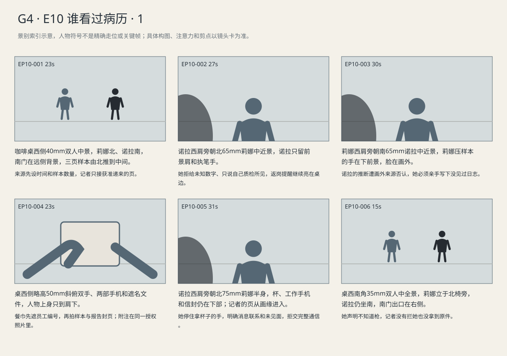
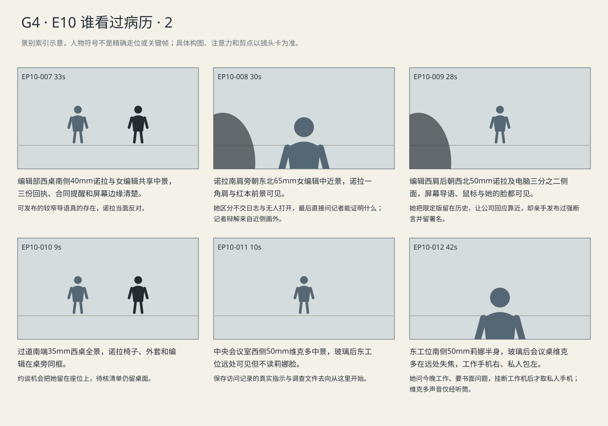

莉娜明确拒绝未经证实的推断；编辑给出限定版本，诺拉仍保留无人打开的断言并获得全国版约谈。
剧本Markdown · 全部独立复制稿 · 英语字幕 · 中文字幕
详细剧本
时长说明：本集略超5分钟，保留完整交锋和对方反应；不以加速对白或截断场景压缩。
E10-SC01 · 日·答辩次日上午 · CAFE
咖啡店南门不断进出取外卖的人，吧台在东，西窗的上午散射光落在西北桌边。莉娜坐北侧看得见门，灰信封贴身、工作手机在右；诺拉坐南侧，红本尚未打开。
服务员放下两杯咖啡。莉娜将杯子移到桌东缘，灰信封贴着自己；诺拉刚翻开红本，她伸手压住信封口，先说明离开的时间。
莉娜（英语，先限制时间，手压住信封）：I've got twenty minutes before I'm due back.
中文对照：我二十分钟后就得回去。
诺拉（英语，顺着她的时限，直接看材料）：Okay. What have you got?
中文对照：好，带了什么？
莉娜只抽出三页盖过身份的表格，剩余封页压在北侧手肘下。诺拉将玛拉授权的上传回执推过去，比对一处缺材栏，不碰其余材料。
莉娜（英语，只抽出约定三页）：Three cases. That's all I can give you.
中文对照：三个案子，我只能给你这些。
诺拉（英语，对着两栏核对，不替医生下结论）：Receipt here, missing paperwork here. Same code on all three.
中文对照：这里是回执，这里又说缺材料。三个代码都一样。
诺拉把三个相同代码排成一列，写下统一处理的问号。莉娜将别的纸继续压在肘下，只把最先那份回执留给她比对。
诺拉（英语，想扩大样本）：How many more look like this?
中文对照：还有多少是这样的？
莉娜（英语，截住扩张，不撤回已核部分）：I checked these three. I'm not giving you a number I don't have.
中文对照：我核过的就是这三个。没数过的，我不会给你编个数。
诺拉（英语，改找可核实的人）：Can I talk to the doctors who signed them?
中文对照：能找签字的医生谈谈吗？
莉娜（英语，不替医生授权）：You'll have to ask them.
中文对照：那得你自己去问。
南门铃响，莉娜把露出的报告封页翻面。取外卖的人从桌东侧经过，她等他走远，将封页重新露给诺拉，但只让看页首。
莉娜（英语，压低声抱怨一件做过却没结果的工作）：I reported it. Got a ticket number. Never heard back.
中文对照：我报过，给了个处理编号，就再没消息了。
诺拉写下批量签名四个字，把本子转向莉娜求确认。莉娜没有看本子，而把三张表压到一起，手留在最上面那张不放。
诺拉（英语，想从她嘴里拿到一句肯定）：Signed off without opening the files?
中文对照：没打开文件就签了？
莉娜（英语，打断推断，压住原件不让带走）：I haven't seen the viewing logs. Don't say I told you that.
中文对照：我没看过访问记录。别说是我告诉你的。
诺拉没有立刻收回批量签名的字样，转而指向缺材料栏。莉娜把她的本子推回南侧，要求那句限定也留在上面。
诺拉（英语，试图让来源补上因果）：Then how does a file get signed off with the paperwork missing?
中文对照：那缺着材料，怎么还能签？
莉娜（英语，把自己的质检问题与结论分开）：That's what I asked in the report. It isn't an answer.
中文对照：报告里我问的就是这个。那是问题，不是答案。
诺拉（英语，写下限定，心里仍不满意）：Okay. You haven't seen them. I've got it.
中文对照：好，你没看过。我记了。
诺拉举手机拍照，莉娜用餐巾盖住员工编号。诺拉先放下手机确认范围；得到同意后，她拍下遮名的三页样本，纸上只留下日期和处理代码，莉娜未放走原件。
莉娜（英语，餐巾先盖编号，再提醒）：You can trace that right to me.
中文对照：顺着这个就能查到我。
诺拉（英语，手机先放低，等明确范围）：Okay. Dates only?
中文对照：好，只拍日期？
莉娜（英语，给出有限同意）：And the report number.
中文对照：还有报告编号。
诺拉抄下文号，向莉娜指出尾数请她校正。莉娜允许她再拍这一页的去身份副本；诺拉手机收进整张封页，可见附注‘ATTACHMENTS: SEE LIST’，但她只盯文号尾数。原件随后回灰信封。
诺拉（英语，逐位核完后问下一步）：This number gets us the report?
中文对照：凭这个编号能找着报告？
莉娜（英语，给线索，不保证结果）：It should. They never sent me a response.
中文对照：应该能。他们一直没给我回复。
诺拉翻出先前在患者互助资料里见过的同一处裁切痕迹，放在三页样本旁。莉娜拿杯子的手停住，工作手机催返的振动又响，她没有接。
诺拉（英语，陈述核对结果）：Luigi had this page.
中文对照：路易吉拿过这一页。
莉娜（英语，先交代当时为什么发）：I sent it to the appeal group. He offered to help.
中文对照：我发到申诉互助组，他说可以帮忙。
工作手机的返岗提醒仍未消失。诺拉把同一裁切页转正，不碰莉娜的手机；莉娜把报告封页收进灰信封，桌上只剩三份样本。
诺拉（英语，先核联系形式）：Did you meet him?
中文对照：见过他本人吗？
莉娜（英语，只答亲历）：No. Messages. Mostly people asking where to send an appeal.
中文对照：没见过。就是发消息，大多问申诉往哪儿寄。
诺拉（英语，争取通信）：Can you show me those?
中文对照：能让我看看吗？
莉娜（英语，拒绝交出完整通信）：Not here. Not before I talk to someone.
中文对照：这里不行。我得先找人问清楚。
莉娜把样本收回信封，起身才意识到杯里的咖啡一口没喝。诺拉没有拦路，只说明仍须写明资料流转；莉娜拿起工作手机，将那句否认说得比前面更响。
莉娜（英语，收信封时顾不上压稳声音）：Don't put me in a story about him.
中文对照：别把我扯进他的报道里。
诺拉（英语，不拦她，说明自己能答应到哪）：I won't name you. But I have to mention the group.
中文对照：我不写你名字，但互助组得写。
莉娜（英语，离开前补得更响，急于划开责任）：I didn't know anything about a gun.
中文对照：枪的事，我什么都不知道。
E10-SC02 · 傍晚·当天截稿前 · NEWSROOM
当天傍晚编辑部西窗转暗。诺拉坐西桌，女值班编辑站东侧，共用屏幕旁放着三份回执与合同续签提醒，来源的警告还在红本上。
编辑把诺拉的合同续签提醒压到稿件边上，要求在换班前交稿。诺拉把莉娜那句警告留在笔记里，拿正文里的可验证三项顶上去。
值班编辑（英语，只追问最强断言有没有直接依据）：Did anyone actually see a doctor skip a file?
中文对照：有人真见过医生跳过一份病历吗？
诺拉（英语，承认缺口后仍把材料推回编辑）：No. Three receipts, three denials. Nobody will explain it.
中文对照：没有。三份回执，三份拒赔，没人肯解释。
编辑将导语暂改成三个申请材料去向不明，屏幕上保留更改痕迹。诺拉把纸质回执推到键盘前，挡住合同提醒的一角。
值班编辑（英语，给出可发的版本）：Three families sent records. The insurer says they were missing. We can prove that much.
中文对照：三家交过材料，保险方却说缺材料。至少这些能证实。
诺拉（英语，嫌限定写法没有揭穿原因）：That's the letter they already got. We need to say what happened to them.
中文对照：那不就是他们收到的那封信吗。我们得写清他们到底遇到了什么。
公司书面回复到达，诺拉将它贴入正文第三段。编辑想把它移近标题，诺拉拖动鼠标让开头仍落在那三份对不上的记录上。
值班编辑（英语，读回复）：They say clinicians reviewed them.
中文对照：他们说临床人员复核过。
诺拉（英语，接受引用，仍想保住自己的开头）：Use it. They still haven't sent the logs.
中文对照：加进去。他们还是没给日志。
编辑从公司回复回到第一行，把无人打开的动词圈出来。诺拉看见自己记下的来源警告，先将本子往外移，仍坚持让导语留在最前。
值班编辑（英语，说具体缺口）：Not sending us a log isn't the same as nobody opening a file.
中文对照：不给我们日志，不等于没人打开过文件。
诺拉（英语，把举证负担推回公司）：Then they can show us one. We've asked twice.
中文对照：那就拿一份给我们看。已经问两次了。
值班编辑（英语，不让她换问题）：I'm asking what you can show me.
中文对照：我问的是你能拿什么给我看。
诺拉把限定版本留在修订历史，恢复原导语。问题式标题没变，下面已经是没人打开过文件的陈述；编辑看着她按回原句，没有替她操作。
诺拉（英语，以重复模式替代尚无的访问证明）：Three times. Same missing-materials code. I'm keeping the line.
中文对照：三次，同样的缺材料代码。那句我要留着。
值班编辑（英语，让步，但坚持回应位置）：Keep their response beside it. Don't bury it.
中文对照：公司回复紧挨着放。别藏到下面。
诺拉（英语，接受位置，不改断言）：Fine.
中文对照：行。
编辑把鼠标推回诺拉。她看一眼红本里的没看过日志，再看问题式标题下仍写着 Nobody opened the files. 的导语；公司回应紧挨着放。她没有改断言，亲手发布，社媒摘句采用同一行。
值班编辑（英语，不替她担）：Your call.
中文对照：你决定。
诺拉（英语，承担也争机会）：Leave my name on it.
中文对照：留我的署名。
全国版约谈消息弹出，诺拉拿外套的动作停住。编辑指了指她桌边的续约提醒，诺拉重新坐下，先回复约谈时间。
值班编辑（英语，好消息的口吻）：National desk. They want a meeting.
中文对照：全国版，要跟你谈谈。
诺拉（英语，比核实时快答）：Tomorrow? I can do tomorrow.
中文对照：明天？明天我行。
E10-SC03 · 夜·稿件发布后 · INSURER
当晚公司东侧质检区只亮一排灯，莉娜已经把包从椅背取下。玻璃另一边中央会议室，维克多坐桌北端核对文章中三个日期，双方通过工作电话相连。
维克多将文章里的三个样本日期放大，和内部文号列表并排，拨给法务要求保留访问记录。他没有查记者的私人消息。
维克多（英语，给法务两件具体工作，不做威胁宣言）：Find out who handled these cases. Preserve the access records.
中文对照：查清这几例是谁处理的。访问记录保留下来。
莉娜准备下班，看到工作手机的法务电话会议来电，把椅背上的包取下又放回。她保存尚未完成的质检表，接起电话。
莉娜（英语，先确认自己的处境）：I'm still here. Should I bring someone?
中文对照：我还在。要不要找个人陪我？
莉娜还没挂断工作电话。她把刚保存的质检表留在屏幕上，玻璃外会议室的维克多并没有走过来。
莉娜（英语，先问眼前能做什么）：Am I supposed to keep working tonight?
中文对照：今晚还要我接着干吗？
维克多（英语，不逼当晚答复资料流转）：Save what you're doing. We'll arrange a time with counsel.
中文对照：手头先保存。我们会约律师在场的时候谈。
莉娜（英语，争取书面范围）：Email me the request. I want to know what I'm answering.
中文对照：要求发我邮箱。我得知道要答哪些问题。
法务电话会议里，维克多的要求从莉娜右手的工作手机听筒传来。她望向玻璃后的会议桌，听完才挂断，把工作手机放桌右；左手将椅背包拉近，右手从包里取私人手机，给自己的独立咨询发约见消息。
维克多（英语，把要求说清，不替她提供保证）：We need to know where the documents went. You can speak to a lawyer first.
中文对照：我们得弄清文件传到哪儿了。你可以先跟律师谈谈。
景别索引板
简化人物符号仅用于检索景别。完整镜头卡、信息变化及相邻剪点另页阅读。


逐镜复制稿
EP10-001 · 制作号E10-SH001 · 23s · 咖啡桌西侧40mm双人中景，莉娜北、诺拉南，南门在远侧背景，三页样本由北推到中间。
来源先设时间和样本数量，记者只接获准递来的页。
成片采用 [0,23) 秒；2个生成候选，技术边界不是剪点。候选未生成。
成片镜 E10-SH001 共23秒；下面2个独立生成候选共同服务本镜。技术接续不等于成片剪点，不能将本文件整段提交为一次任务。先制作并核验连续表演、机位和声线，再决定延长或覆盖方案；当前无实际媒体。
【E10-SH001-G01 · 本镜采用 0—11 秒】
16:9横屏，当代美国真人现实悬疑。环境低至中等饱和，人物肤色保持真实差异与自然纹理；深黑保留衣料和道具分离，白纸与白领高光柔和有层次。冷暖来自本镜已有物理光源，不统一青橙、不磨皮、不以整体欠曝制造悬疑。遵循本镜机位、表演与焦点，不擅自追加缓推、急变焦或摇晃。
场次风格：本场时段：日·答辩次日上午。本场光源启用及强度以明确时段和正文为准，同场反打继承光源方向；不因景别变化任意换色温。 本地光色与材质：西窗与东吧台暖补依时段分区，杯子、纸件、橄榄开衫保持日常颜色；眼镜反射保留但不遮蔽关键眼神。桌边距离和交出哪一页比装饰虚化更重要。
总生成长度13秒，为中间11秒采用区间保留开头和结尾各1秒自然余量，不增添剧情。
人物：
以下为连续镜的身份库；人物是否已入画、离场及持物只依本段起态与动作，不能把整镜所有角色同时塞入本段。
莉娜，41岁白人女性，棕黑发低髻、薄金属框眼镜、橄榄绿开衫、白棉衬衫、炭灰裤，灰色文件信封。声音较轻、谨慎，有被追问后的停顿。
诺拉，32岁华裔美国女性，黑色齐肩直发、灰蓝大衣、米白衬衫、深色牛仔裤、黑鞋，红皮笔记本和黑手机。声音明亮清楚，采访时给对方说完。
环境与光源：入口南、吧台东、西窗、二人桌西北；莉娜坐北侧看得见南门，诺拉坐南侧。日间西窗环境主光、吧台暖补。不得反打后两人交换位置。
景别/机位：咖啡桌西侧40mm双人中景
构图：沿用该成片镜既定机位和场景方向；当前站位、朝向与持物：莉娜左手压灰信封，工作手机右手扣着。
起始画面：莉娜左手压灰信封，工作手机右手扣着。
事件与表演：服务员放下两杯咖啡。莉娜将杯子移到桌东缘，灰信封贴着自己；诺拉刚翻开红本，她伸手压住信封口，先说明离开的时间。
注意力变化：莉娜左手压灰信封，工作手机右手扣着。 → 二人仍南北对坐，信封未开，莉娜右手工作手机计时。
摄影机：固定，让信封到桌中成为第一次构图变化。
焦点：仅响应本段当前动作与受话关系；不预先转向尚未发生的后段事件。
结束状态：二人仍南北对坐，信封未开，莉娜右手工作手机计时。
声音：<咖啡店低位通风与远桌不可辨人声；当前空间连续环境底声；拟音只随本段真实动作与物件接触发生，已完成事件不重演；可辨英语仅为下列本段对白。>
(无背景音乐，场内连续底声承担空间与节奏。)
准确对白按顺序：
莉娜向诺拉，先限制时间，手压住信封，只使用英语说一次：{I've got twenty minutes before I'm due back.}
诺拉向莉娜，顺着她的时限，直接看材料，只使用英语说一次：{Okay. What have you got?}
只说列出的英语原句；导演说明不发声，不说中文译文，不额外加旁白或对白。手机/公文/字幕均由后期叠加，生成画面不排字。单镜连续，不加入内部切镜；前后保持身份、服装、门窗、物件与接触状态一致。
【E10-SH001-G02 · 本镜采用 11—23 秒】
16:9横屏，当代美国真人现实悬疑。环境低至中等饱和，人物肤色保持真实差异与自然纹理；深黑保留衣料和道具分离，白纸与白领高光柔和有层次。冷暖来自本镜已有物理光源，不统一青橙、不磨皮、不以整体欠曝制造悬疑。遵循本镜机位、表演与焦点，不擅自追加缓推、急变焦或摇晃。
场次风格：本场时段：日·答辩次日上午。本场光源启用及强度以明确时段和正文为准，同场反打继承光源方向；不因景别变化任意换色温。 本地光色与材质：西窗与东吧台暖补依时段分区，杯子、纸件、橄榄开衫保持日常颜色；眼镜反射保留但不遮蔽关键眼神。桌边距离和交出哪一页比装饰虚化更重要。
总生成长度14秒，为中间12秒采用区间保留开头和结尾各1秒自然余量，不增添剧情。
人物：
以下为连续镜的身份库；人物是否已入画、离场及持物只依本段起态与动作，不能把整镜所有角色同时塞入本段。
莉娜，41岁白人女性，棕黑发低髻、薄金属框眼镜、橄榄绿开衫、白棉衬衫、炭灰裤，灰色文件信封。声音较轻、谨慎，有被追问后的停顿。
诺拉，32岁华裔美国女性，黑色齐肩直发、灰蓝大衣、米白衬衫、深色牛仔裤、黑鞋，红皮笔记本和黑手机。声音明亮清楚，采访时给对方说完。
环境与光源：入口南、吧台东、西窗、二人桌西北；莉娜坐北侧看得见南门，诺拉坐南侧。日间西窗环境主光、吧台暖补。不得反打后两人交换位置。
景别/机位：咖啡桌西侧40mm双人中景
构图：沿用该成片镜既定机位和场景方向；当前站位、朝向与持物：二人仍南北对坐，信封未开，莉娜右手工作手机计时。
起始画面：二人仍南北对坐，信封未开，莉娜右手工作手机计时。
事件与表演：莉娜只抽出三页盖过身份的表格，剩余封页压在北侧手肘下。诺拉将玛拉授权的上传回执推过去，比对一处缺材栏，不碰其余材料。
注意力变化：二人仍南北对坐，信封未开，莉娜右手工作手机计时。 → 三页样本在中间，报告封页仍归莉娜。
摄影机：固定，让信封到桌中成为第一次构图变化。
焦点：仅响应本段当前动作与受话关系；不预先转向尚未发生的后段事件。
结束状态：三页样本在中间，报告封页仍归莉娜。
声音：<咖啡店低位通风与远桌不可辨人声；当前空间连续环境底声；拟音只随本段真实动作与物件接触发生，已完成事件不重演；可辨英语仅为下列本段对白。>
(无背景音乐，场内连续底声承担空间与节奏。)
准确对白按顺序：
莉娜向诺拉，只抽出约定三页，只使用英语说一次：{Three cases. That's all I can give you.}
诺拉向莉娜，对着两栏核对，不替医生下结论，只使用英语说一次：{Receipt here, missing paperwork here. Same code on all three.}
只说列出的英语原句；导演说明不发声，不说中文译文，不额外加旁白或对白。手机/公文/字幕均由后期叠加，生成画面不排字。单镜连续，不加入内部切镜；前后保持身份、服装、门窗、物件与接触状态一致。静帧起态备稿
16:9横屏，当代美国真人现实悬疑。环境低至中等饱和，人物肤色保持真实差异与自然纹理；深黑保留衣料和道具分离，白纸与白领高光柔和有层次。冷暖来自本镜已有物理光源，不统一青橙、不磨皮、不以整体欠曝制造悬疑。遵循本镜机位、表演与焦点，不擅自追加缓推、急变焦或摇晃。
场次风格：本场时段：日·答辩次日上午。本场光源启用及强度以明确时段和正文为准，同场反打继承光源方向；不因景别变化任意换色温。 本地光色与材质：西窗与东吧台暖补依时段分区，杯子、纸件、橄榄开衫保持日常颜色；眼镜反射保留但不遮蔽关键眼神。桌边距离和交出哪一页比装饰虚化更重要。
莉娜，41岁白人女性，棕黑发低髻、薄金属框眼镜、橄榄绿开衫、白棉衬衫、炭灰裤，灰色文件信封。声音较轻、谨慎，有被追问后的停顿。
诺拉，32岁华裔美国女性，黑色齐肩直发、灰蓝大衣、米白衬衫、深色牛仔裤、黑鞋，红皮笔记本和黑手机。声音明亮清楚，采访时给对方说完。
入口南、吧台东、西窗、二人桌西北；莉娜坐北侧看得见南门，诺拉坐南侧。日间西窗环境主光、吧台暖补。不得反打后两人交换位置。
咖啡桌西侧40mm双人中景，莉娜北、诺拉南，南门在远侧背景，三页样本由北推到中间。；起态构图：莉娜左手压灰信封，工作手机右手扣着。。空间方位按上列环境，人物只处于起态；本镜后续调度不出现在静帧。此图不描画尚未发生的动作，不生成字幕和公文长字。
| 英语原句 | 中文对照 | 预定窗口 |
|---|
| 莉娜：I've got twenty minutes before I'm due back. | 我二十分钟后就得回去。 | 1–4.3s |
| 诺拉：Okay. What have you got? | 好，带了什么？ | 4.6–7.4s |
| 莉娜：Three cases. That's all I can give you. | 三个案子，我只能给你这些。 | 12–16.3s |
| 诺拉：Receipt here, missing paperwork here. Same code on all three. | 这里是回执，这里又说缺材料。三个代码都一样。 | 16.6–21.8s |
观众信息：记者索取能发表的因果，来源只愿交有限核实材料。 → 三页样本在中间，报告封页仍归莉娜。
切点：诺拉追问还有多少，切向有权拒绝扩大样本的来源。
接口：接E10-SH003；诺拉追问还有多少，切向有权拒绝扩大样本的来源。
EP10-002 · 制作号E10-SH003 · 27s · 诺拉西肩旁朝北65mm莉娜中近景，诺拉只留前景肩和执笔手。
她拒给未知数字、只说自己质检所见，返岗提醒继续亮在桌边。
成片采用 [23,50) 秒；2个生成候选，技术边界不是剪点。候选未生成。
成片镜 E10-SH003 共27秒；下面2个独立生成候选共同服务本镜。技术接续不等于成片剪点，不能将本文件整段提交为一次任务。先制作并核验连续表演、机位和声线，再决定延长或覆盖方案；当前无实际媒体。
【E10-SH003-G01 · 本镜采用 0—18 秒】
16:9横屏，当代美国真人现实悬疑。环境低至中等饱和，人物肤色保持真实差异与自然纹理；深黑保留衣料和道具分离，白纸与白领高光柔和有层次。冷暖来自本镜已有物理光源，不统一青橙、不磨皮、不以整体欠曝制造悬疑。遵循本镜机位、表演与焦点，不擅自追加缓推、急变焦或摇晃。
场次风格：本场时段：日·答辩次日上午。本场光源启用及强度以明确时段和正文为准，同场反打继承光源方向；不因景别变化任意换色温。 本地光色与材质：西窗与东吧台暖补依时段分区，杯子、纸件、橄榄开衫保持日常颜色；眼镜反射保留但不遮蔽关键眼神。桌边距离和交出哪一页比装饰虚化更重要。
总生成长度20秒，为中间18秒采用区间保留开头和结尾各1秒自然余量，不增添剧情。
人物：
以下为连续镜的身份库；人物是否已入画、离场及持物只依本段起态与动作，不能把整镜所有角色同时塞入本段。
莉娜，41岁白人女性，棕黑发低髻、薄金属框眼镜、橄榄绿开衫、白棉衬衫、炭灰裤，灰色文件信封。声音较轻、谨慎，有被追问后的停顿。
诺拉，32岁华裔美国女性，黑色齐肩直发、灰蓝大衣、米白衬衫、深色牛仔裤、黑鞋，红皮笔记本和黑手机。声音明亮清楚，采访时给对方说完。
环境与光源：入口南、吧台东、西窗、二人桌西北；莉娜坐北侧看得见南门，诺拉坐南侧。日间西窗环境主光、吧台暖补。不得反打后两人交换位置。
景别/机位：诺拉西肩旁朝北65mm莉娜中近景
构图：沿用该成片镜既定机位和场景方向；当前站位、朝向与持物：三页样本在中间，报告封页仍归莉娜。
起始画面：三页样本在中间，报告封页仍归莉娜。
事件与表演：诺拉把三个相同代码排成一列，写下统一处理的问号。莉娜将别的纸继续压在肘下，只把最先那份回执留给她比对。
注意力变化：三页样本在中间，报告封页仍归莉娜。 → 诺拉在医生姓名栏旁写待联系，三个病例没有扩成总体结论。
摄影机：固定；门铃响时不切门，留在莉娜翻面护页的反应。
焦点：仅响应本段当前动作与受话关系；不预先转向尚未发生的后段事件。
结束状态：诺拉在医生姓名栏旁写待联系，三个病例没有扩成总体结论。
声音：<咖啡店低位通风与远桌不可辨人声；当前空间连续环境底声；拟音只随本段真实动作与物件接触发生，已完成事件不重演；可辨英语仅为下列本段对白。>
(无背景音乐，场内连续底声承担空间与节奏。)
准确对白按顺序：
诺拉向莉娜，想扩大样本，只使用英语说一次：{How many more look like this?}
莉娜向诺拉，截住扩张，不撤回已核部分，只使用英语说一次：{I checked these three. I'm not giving you a number I don't have.}
诺拉向莉娜，改找可核实的人，只使用英语说一次：{Can I talk to the doctors who signed them?}
莉娜向诺拉，不替医生授权，只使用英语说一次：{You'll have to ask them.}
只说列出的英语原句；导演说明不发声，不说中文译文，不额外加旁白或对白。手机/公文/字幕均由后期叠加，生成画面不排字。单镜连续，不加入内部切镜；前后保持身份、服装、门窗、物件与接触状态一致。
【E10-SH003-G02 · 本镜采用 18—27 秒】
16:9横屏，当代美国真人现实悬疑。环境低至中等饱和，人物肤色保持真实差异与自然纹理；深黑保留衣料和道具分离，白纸与白领高光柔和有层次。冷暖来自本镜已有物理光源，不统一青橙、不磨皮、不以整体欠曝制造悬疑。遵循本镜机位、表演与焦点，不擅自追加缓推、急变焦或摇晃。
场次风格：本场时段：日·答辩次日上午。本场光源启用及强度以明确时段和正文为准，同场反打继承光源方向；不因景别变化任意换色温。 本地光色与材质：西窗与东吧台暖补依时段分区，杯子、纸件、橄榄开衫保持日常颜色；眼镜反射保留但不遮蔽关键眼神。桌边距离和交出哪一页比装饰虚化更重要。
总生成长度11秒，为中间9秒采用区间保留开头和结尾各1秒自然余量，不增添剧情。
人物：
以下为连续镜的身份库；人物是否已入画、离场及持物只依本段起态与动作，不能把整镜所有角色同时塞入本段。
莉娜，41岁白人女性，棕黑发低髻、薄金属框眼镜、橄榄绿开衫、白棉衬衫、炭灰裤，灰色文件信封。声音较轻、谨慎，有被追问后的停顿。
诺拉，32岁华裔美国女性，黑色齐肩直发、灰蓝大衣、米白衬衫、深色牛仔裤、黑鞋，红皮笔记本和黑手机。声音明亮清楚，采访时给对方说完。
环境与光源：入口南、吧台东、西窗、二人桌西北；莉娜坐北侧看得见南门，诺拉坐南侧。日间西窗环境主光、吧台暖补。不得反打后两人交换位置。
景别/机位：诺拉西肩旁朝北65mm莉娜中近景
构图：沿用该成片镜既定机位和场景方向；当前站位、朝向与持物：诺拉在医生姓名栏旁写待联系，三个病例没有扩成总体结论。
起始画面：诺拉在医生姓名栏旁写待联系，三个病例没有扩成总体结论。
事件与表演：南门铃响，莉娜把露出的报告封页翻面。取外卖的人从桌东侧经过，她等他走远，将封页重新露给诺拉，但只让看页首。
注意力变化：诺拉在医生姓名栏旁写待联系，三个病例没有扩成总体结论。 → 封页文号可见，正文仍被她手臂遮住。
摄影机：固定；门铃响时不切门，留在莉娜翻面护页的反应。
焦点：仅响应本段当前动作与受话关系；不预先转向尚未发生的后段事件。
结束状态：封页文号可见，正文仍被她手臂遮住。
声音：<咖啡店低位通风与远桌不可辨人声；当前空间连续环境底声；拟音只随本段真实动作与物件接触发生，已完成事件不重演；可辨英语仅为下列本段对白。>
(无背景音乐，场内连续底声承担空间与节奏。)
准确对白按顺序：
莉娜向诺拉，压低声抱怨一件做过却没结果的工作，只使用英语说一次：{I reported it. Got a ticket number. Never heard back.}
只说列出的英语原句；导演说明不发声，不说中文译文，不额外加旁白或对白。手机/公文/字幕均由后期叠加，生成画面不排字。单镜连续，不加入内部切镜；前后保持身份、服装、门窗、物件与接触状态一致。静帧起态备稿
16:9横屏，当代美国真人现实悬疑。环境低至中等饱和，人物肤色保持真实差异与自然纹理；深黑保留衣料和道具分离，白纸与白领高光柔和有层次。冷暖来自本镜已有物理光源，不统一青橙、不磨皮、不以整体欠曝制造悬疑。遵循本镜机位、表演与焦点，不擅自追加缓推、急变焦或摇晃。
场次风格：本场时段：日·答辩次日上午。本场光源启用及强度以明确时段和正文为准，同场反打继承光源方向；不因景别变化任意换色温。 本地光色与材质：西窗与东吧台暖补依时段分区，杯子、纸件、橄榄开衫保持日常颜色；眼镜反射保留但不遮蔽关键眼神。桌边距离和交出哪一页比装饰虚化更重要。
莉娜，41岁白人女性，棕黑发低髻、薄金属框眼镜、橄榄绿开衫、白棉衬衫、炭灰裤，灰色文件信封。声音较轻、谨慎，有被追问后的停顿。
诺拉，32岁华裔美国女性，黑色齐肩直发、灰蓝大衣、米白衬衫、深色牛仔裤、黑鞋，红皮笔记本和黑手机。声音明亮清楚，采访时给对方说完。
入口南、吧台东、西窗、二人桌西北；莉娜坐北侧看得见南门，诺拉坐南侧。日间西窗环境主光、吧台暖补。不得反打后两人交换位置。
诺拉西肩旁朝北65mm莉娜中近景，诺拉只留前景肩和执笔手。；起态构图：三页样本在中间，报告封页仍归莉娜。。空间方位按上列环境，人物只处于起态；本镜后续调度不出现在静帧。此图不描画尚未发生的动作，不生成字幕和公文长字。
| 英语原句 | 中文对照 | 预定窗口 |
|---|
| 诺拉：How many more look like this? | 还有多少是这样的？ | 1–3.35s |
| 莉娜：I checked these three. I'm not giving you a number I don't have. | 我核过的就是这三个。没数过的，我不会给你编个数。 | 3.65–8.75s |
| 诺拉：Can I talk to the doctors who signed them? | 能找签字的医生谈谈吗？ | 9.05–12.58s |
| 莉娜：You'll have to ask them. | 那得你自己去问。 | 12.88–14.84s |
| 莉娜：I reported it. Got a ticket number. Never heard back. | 我报过，给了个处理编号，就再没消息了。 | 19–25.2s |
观众信息：三页样本在中间，报告封页仍归莉娜。 → 封页文号可见，正文仍被她手臂遮住。
切点：她重新露页首，诺拉提出没读就签的解释，切看记者如何要求确认。
接口：接E10-SH004；她重新露页首，诺拉提出没读就签的解释，切看记者如何要求确认。
EP10-003 · 制作号E10-SH004 · 30s · 莉娜西肩旁朝南65mm诺拉中近景，莉娜压样本的手在下前景，脸在画外。
诺拉的推断遭画外来源否认，她必须亲手写下没见过日志。
成片采用 [50,80) 秒；2个生成候选，技术边界不是剪点。候选未生成。
成片镜 E10-SH004 共30秒；下面2个独立生成候选共同服务本镜。技术接续不等于成片剪点，不能将本文件整段提交为一次任务。先制作并核验连续表演、机位和声线，再决定延长或覆盖方案；当前无实际媒体。
【E10-SH004-G01 · 本镜采用 0—12 秒】
16:9横屏，当代美国真人现实悬疑。环境低至中等饱和，人物肤色保持真实差异与自然纹理；深黑保留衣料和道具分离，白纸与白领高光柔和有层次。冷暖来自本镜已有物理光源，不统一青橙、不磨皮、不以整体欠曝制造悬疑。遵循本镜机位、表演与焦点，不擅自追加缓推、急变焦或摇晃。
场次风格：本场时段：日·答辩次日上午。本场光源启用及强度以明确时段和正文为准，同场反打继承光源方向；不因景别变化任意换色温。 本地光色与材质：西窗与东吧台暖补依时段分区，杯子、纸件、橄榄开衫保持日常颜色；眼镜反射保留但不遮蔽关键眼神。桌边距离和交出哪一页比装饰虚化更重要。
总生成长度14秒，为中间12秒采用区间保留开头和结尾各1秒自然余量，不增添剧情。
人物：
以下为连续镜的身份库；人物是否已入画、离场及持物只依本段起态与动作，不能把整镜所有角色同时塞入本段。
诺拉，32岁华裔美国女性，黑色齐肩直发、灰蓝大衣、米白衬衫、深色牛仔裤、黑鞋，红皮笔记本和黑手机。声音明亮清楚，采访时给对方说完。
莉娜，41岁白人女性，棕黑发低髻、薄金属框眼镜、橄榄绿开衫、白棉衬衫、炭灰裤，灰色文件信封。声音较轻、谨慎，有被追问后的停顿。
环境与光源：入口南、吧台东、西窗、二人桌西北；莉娜坐北侧看得见南门，诺拉坐南侧。日间西窗环境主光、吧台暖补。不得反打后两人交换位置。
景别/机位：65mm诺拉中近景略向桌面下俯，莉娜压纸的手在前景，诺拉脸仍留上部。
构图：沿用该成片镜既定机位和场景方向；当前站位、朝向与持物：封页文号可见，正文仍被她手臂遮住。
起始画面：封页文号可见，正文仍被她手臂遮住。
事件与表演：诺拉写下批量签名四个字，把本子转向莉娜求确认。莉娜没有看本子，而把三张表压到一起，手留在最上面那张不放。
注意力变化：封页文号可见，正文仍被她手臂遮住。 → 本子里的解释未获来源认可；三页仍在莉娜手下。
摄影机：莉娜西肩旁原机位固定地面位置；诺拉把红本转向来源时，仅轻微下俯一次纳入本子与被压住的样本，调整后停住。
焦点：让推断和来源拒绝落在记者可见反应上，红本的出现触发一次俯角调整，不是单独纸件特写。
结束状态：本子里的解释未获来源认可；三页仍在莉娜手下。
声音：<咖啡店低位通风与远桌不可辨人声；当前空间连续环境底声；拟音只随本段真实动作与物件接触发生，已完成事件不重演；可辨英语仅为下列本段对白。>
(无背景音乐，场内连续底声承担空间与节奏。)
准确对白按顺序：
诺拉向莉娜，想从她嘴里拿到一句肯定，只使用英语说一次：{Signed off without opening the files?}
莉娜向诺拉，打断推断，压住原件不让带走，只使用英语说一次：{I haven't seen the viewing logs. Don't say I told you that.}
只说列出的英语原句；导演说明不发声，不说中文译文，不额外加旁白或对白。手机/公文/字幕均由后期叠加，生成画面不排字。单镜连续，不加入内部切镜；前后保持身份、服装、门窗、物件与接触状态一致。
【E10-SH004-G02 · 本镜采用 12—30 秒】
16:9横屏，当代美国真人现实悬疑。环境低至中等饱和，人物肤色保持真实差异与自然纹理；深黑保留衣料和道具分离，白纸与白领高光柔和有层次。冷暖来自本镜已有物理光源，不统一青橙、不磨皮、不以整体欠曝制造悬疑。遵循本镜机位、表演与焦点，不擅自追加缓推、急变焦或摇晃。
场次风格：本场时段：日·答辩次日上午。本场光源启用及强度以明确时段和正文为准，同场反打继承光源方向；不因景别变化任意换色温。 本地光色与材质：西窗与东吧台暖补依时段分区，杯子、纸件、橄榄开衫保持日常颜色；眼镜反射保留但不遮蔽关键眼神。桌边距离和交出哪一页比装饰虚化更重要。
总生成长度20秒，为中间18秒采用区间保留开头和结尾各1秒自然余量，不增添剧情。
人物：
以下为连续镜的身份库；人物是否已入画、离场及持物只依本段起态与动作，不能把整镜所有角色同时塞入本段。
诺拉，32岁华裔美国女性，黑色齐肩直发、灰蓝大衣、米白衬衫、深色牛仔裤、黑鞋，红皮笔记本和黑手机。声音明亮清楚，采访时给对方说完。
莉娜，41岁白人女性，棕黑发低髻、薄金属框眼镜、橄榄绿开衫、白棉衬衫、炭灰裤，灰色文件信封。声音较轻、谨慎，有被追问后的停顿。
环境与光源：入口南、吧台东、西窗、二人桌西北；莉娜坐北侧看得见南门，诺拉坐南侧。日间西窗环境主光、吧台暖补。不得反打后两人交换位置。
景别/机位：同一65mm记者与桌边中近景，前景仍只见莉娜的手，原件留北侧。
构图：沿用该成片镜既定机位和场景方向；当前站位、朝向与持物：本子里的解释未获来源认可；三页仍在莉娜手下。
起始画面：本子里的解释未获来源认可；三页仍在莉娜手下。
事件与表演：诺拉没有立刻收回批量签名的字样，转而指向缺材料栏。莉娜把她的本子推回南侧，要求那句限定也留在上面。
注意力变化：本子里的解释未获来源认可；三页仍在莉娜手下。 → 诺拉把没看过日志写全，随后才拿起手机请求拍摄。
摄影机：继承G01轻微下俯后的终点角度，整段固定；本子被推回南侧时由人物移动纸，相机不再次下俯或复位上仰。
焦点：诺拉把没见过日志写全的手和脸都保留；焦点不替她把猜测突出成证据。
结束状态：诺拉把没看过日志写全，随后才拿起手机请求拍摄。
声音：<咖啡店低位通风与远桌不可辨人声；当前空间连续环境底声；拟音只随本段真实动作与物件接触发生，已完成事件不重演；可辨英语仅为下列本段对白。>
(无背景音乐，场内连续底声承担空间与节奏。)
准确对白按顺序：
诺拉向莉娜，试图让来源补上因果，只使用英语说一次：{Then how does a file get signed off with the paperwork missing?}
莉娜向诺拉，把自己的质检问题与结论分开，只使用英语说一次：{That's what I asked in the report. It isn't an answer.}
诺拉向莉娜，写下限定，心里仍不满意，只使用英语说一次：{Okay. You haven't seen them. I've got it.}
只说列出的英语原句；导演说明不发声，不说中文译文，不额外加旁白或对白。手机/公文/字幕均由后期叠加，生成画面不排字。单镜连续，不加入内部切镜；前后保持身份、服装、门窗、物件与接触状态一致。静帧起态备稿
16:9横屏，当代美国真人现实悬疑。环境低至中等饱和，人物肤色保持真实差异与自然纹理；深黑保留衣料和道具分离，白纸与白领高光柔和有层次。冷暖来自本镜已有物理光源，不统一青橙、不磨皮、不以整体欠曝制造悬疑。遵循本镜机位、表演与焦点，不擅自追加缓推、急变焦或摇晃。
场次风格：本场时段：日·答辩次日上午。本场光源启用及强度以明确时段和正文为准，同场反打继承光源方向；不因景别变化任意换色温。 本地光色与材质：西窗与东吧台暖补依时段分区，杯子、纸件、橄榄开衫保持日常颜色；眼镜反射保留但不遮蔽关键眼神。桌边距离和交出哪一页比装饰虚化更重要。
诺拉，32岁华裔美国女性，黑色齐肩直发、灰蓝大衣、米白衬衫、深色牛仔裤、黑鞋，红皮笔记本和黑手机。声音明亮清楚，采访时给对方说完。
莉娜，41岁白人女性，棕黑发低髻、薄金属框眼镜、橄榄绿开衫、白棉衬衫、炭灰裤，灰色文件信封。声音较轻、谨慎，有被追问后的停顿。
入口南、吧台东、西窗、二人桌西北；莉娜坐北侧看得见南门，诺拉坐南侧。日间西窗环境主光、吧台暖补。不得反打后两人交换位置。
莉娜西肩旁朝南65mm诺拉中近景，莉娜压样本的手在下前景，脸在画外。；起态构图：封页文号可见，正文仍被她手臂遮住。。空间方位按上列环境，人物只处于起态；本镜后续调度不出现在静帧。此图不描画尚未发生的动作，不生成字幕和公文长字。
| 英语原句 | 中文对照 | 预定窗口 |
|---|
| 诺拉：Signed off without opening the files? | 没打开文件就签了？ | 1–3.8s |
| 莉娜：I haven't seen the viewing logs. Don't say I told you that. | 我没看过访问记录。别说是我告诉你的。 | 4.1–10.8s |
| 诺拉：Then how does a file get signed off with the paperwork missing? | 那缺着材料，怎么还能签？ | 13–17.71s |
| 莉娜：That's what I asked in the report. It isn't an answer. | 报告里我问的就是这个。那是问题，不是答案。 | 18.01–22.32s |
| 诺拉：Okay. You haven't seen them. I've got it. | 好，你没看过。我记了。 | 22.62–25.76s |
观众信息：封页文号可见，正文仍被她手臂遮住。 → 诺拉把没看过日志写全，随后才拿起手机请求拍摄。
切点：她放下笔准备举手机，转到拍摄许可实际改变的桌面关系。
接口：接E10-SH005；她放下笔准备举手机，转到拍摄许可实际改变的桌面关系。
EP10-004 · 制作号E10-SH005 · 23s · 桌西侧略高50mm斜俯双手、两部手机和遮名文件，人物上身只到肩下。
餐巾先遮员工编号，再拍样本与报告封页；附注在同一授权照片里。
成片采用 [80,103) 秒；2个生成候选，技术边界不是剪点。候选未生成。
成片镜 E10-SH005 共23秒；下面2个独立生成候选共同服务本镜。技术接续不等于成片剪点，不能将本文件整段提交为一次任务。先制作并核验连续表演、机位和声线，再决定延长或覆盖方案；当前无实际媒体。
【E10-SH005-G01 · 本镜采用 0—11 秒】
16:9横屏，当代美国真人现实悬疑。环境低至中等饱和，人物肤色保持真实差异与自然纹理；深黑保留衣料和道具分离，白纸与白领高光柔和有层次。冷暖来自本镜已有物理光源，不统一青橙、不磨皮、不以整体欠曝制造悬疑。遵循本镜机位、表演与焦点，不擅自追加缓推、急变焦或摇晃。
场次风格：本场时段：日·答辩次日上午。本场光源启用及强度以明确时段和正文为准，同场反打继承光源方向；不因景别变化任意换色温。 本地光色与材质：西窗与东吧台暖补依时段分区，杯子、纸件、橄榄开衫保持日常颜色；眼镜反射保留但不遮蔽关键眼神。桌边距离和交出哪一页比装饰虚化更重要。
总生成长度13秒，为中间11秒采用区间保留开头和结尾各1秒自然余量，不增添剧情。
人物：
以下为连续镜的身份库；人物是否已入画、离场及持物只依本段起态与动作，不能把整镜所有角色同时塞入本段。
莉娜，41岁白人女性，棕黑发低髻、薄金属框眼镜、橄榄绿开衫、白棉衬衫、炭灰裤，灰色文件信封。声音较轻、谨慎，有被追问后的停顿。
诺拉，32岁华裔美国女性，黑色齐肩直发、灰蓝大衣、米白衬衫、深色牛仔裤、黑鞋，红皮笔记本和黑手机。声音明亮清楚，采访时给对方说完。
环境与光源：入口南、吧台东、西窗、二人桌西北；莉娜坐北侧看得见南门，诺拉坐南侧。日间西窗环境主光、吧台暖补。不得反打后两人交换位置。
景别/机位：桌西侧略高50mm斜俯双手、两部手机和遮名文件
构图：沿用该成片镜既定机位和场景方向；当前站位、朝向与持物：诺拉把没看过日志写全，随后才拿起手机请求拍摄。
起始画面：诺拉把没看过日志写全，随后才拿起手机请求拍摄。
事件与表演：诺拉举手机拍照，莉娜用餐巾盖住员工编号。诺拉先放下手机确认范围；得到同意后，她拍下遮名的三页样本，纸上只留下日期和处理代码，莉娜未放走原件。
注意力变化：诺拉把没看过日志写全，随后才拿起手机请求拍摄。 → 手机已拍获准的遮名三页，原件仍归莉娜。
摄影机：固定23秒；页在手中移动，不用剪辑放大未授权区域。
焦点：仅响应本段当前动作与受话关系；不预先转向尚未发生的后段事件。
结束状态：手机已拍获准的遮名三页，原件仍归莉娜。
声音：<咖啡店低位通风与远桌不可辨人声；当前空间连续环境底声；拟音只随本段真实动作与物件接触发生，已完成事件不重演；可辨英语仅为下列本段对白。>
(无背景音乐，场内连续底声承担空间与节奏。)
准确对白按顺序：
莉娜向诺拉，餐巾先盖编号，再提醒，只使用英语说一次：{You can trace that right to me.}
诺拉向莉娜，手机先放低，等明确范围，只使用英语说一次：{Okay. Dates only?}
莉娜向诺拉，给出有限同意，只使用英语说一次：{And the report number.}
只说列出的英语原句；导演说明不发声，不说中文译文，不额外加旁白或对白。手机/公文/字幕均由后期叠加，生成画面不排字。单镜连续，不加入内部切镜；前后保持身份、服装、门窗、物件与接触状态一致。
【E10-SH005-G02 · 本镜采用 11—23 秒】
16:9横屏，当代美国真人现实悬疑。环境低至中等饱和，人物肤色保持真实差异与自然纹理；深黑保留衣料和道具分离，白纸与白领高光柔和有层次。冷暖来自本镜已有物理光源，不统一青橙、不磨皮、不以整体欠曝制造悬疑。遵循本镜机位、表演与焦点，不擅自追加缓推、急变焦或摇晃。
场次风格：本场时段：日·答辩次日上午。本场光源启用及强度以明确时段和正文为准，同场反打继承光源方向；不因景别变化任意换色温。 本地光色与材质：西窗与东吧台暖补依时段分区，杯子、纸件、橄榄开衫保持日常颜色；眼镜反射保留但不遮蔽关键眼神。桌边距离和交出哪一页比装饰虚化更重要。
总生成长度14秒，为中间12秒采用区间保留开头和结尾各1秒自然余量，不增添剧情。
人物：
以下为连续镜的身份库；人物是否已入画、离场及持物只依本段起态与动作，不能把整镜所有角色同时塞入本段。
莉娜，41岁白人女性，棕黑发低髻、薄金属框眼镜、橄榄绿开衫、白棉衬衫、炭灰裤，灰色文件信封。声音较轻、谨慎，有被追问后的停顿。
诺拉，32岁华裔美国女性，黑色齐肩直发、灰蓝大衣、米白衬衫、深色牛仔裤、黑鞋，红皮笔记本和黑手机。声音明亮清楚，采访时给对方说完。
环境与光源：入口南、吧台东、西窗、二人桌西北；莉娜坐北侧看得见南门，诺拉坐南侧。日间西窗环境主光、吧台暖补。不得反打后两人交换位置。
景别/机位：桌西侧略高50mm斜俯双手、两部手机和遮名文件
构图：沿用该成片镜既定机位和场景方向；当前站位、朝向与持物：手机已拍获准的遮名三页，原件仍归莉娜。
起始画面：手机已拍获准的遮名三页，原件仍归莉娜。
事件与表演：诺拉抄下文号，向莉娜指出尾数请她校正。莉娜允许她再拍这一页的去身份副本；诺拉手机收进整张封页，可见附注‘ATTACHMENTS: SEE LIST’，但她只盯文号尾数。原件随后回灰信封。
注意力变化：手机已拍获准的遮名三页，原件仍归莉娜。 → 诺拉持有获准拍摄的遮名封页照片，文号校过，附件提示尚未追查；原件由莉娜留存。
摄影机：固定23秒；页在手中移动，不用剪辑放大未授权区域。
焦点：仅响应本段当前动作与受话关系；不预先转向尚未发生的后段事件。
结束状态：诺拉持有获准拍摄的遮名封页照片，文号校过，附件提示尚未追查；原件由莉娜留存。
声音：<咖啡店低位通风与远桌不可辨人声；当前空间连续环境底声；拟音只随本段真实动作与物件接触发生，已完成事件不重演；可辨英语仅为下列本段对白。>
(无背景音乐，场内连续底声承担空间与节奏。)
准确对白按顺序：
诺拉向莉娜，逐位核完后问下一步，只使用英语说一次：{This number gets us the report?}
莉娜向诺拉，给线索，不保证结果，只使用英语说一次：{It should. They never sent me a response.}
只说列出的英语原句；导演说明不发声，不说中文译文，不额外加旁白或对白。手机/公文/字幕均由后期叠加，生成画面不排字。单镜连续，不加入内部切镜；前后保持身份、服装、门窗、物件与接触状态一致。静帧起态备稿
16:9横屏，当代美国真人现实悬疑。环境低至中等饱和，人物肤色保持真实差异与自然纹理；深黑保留衣料和道具分离，白纸与白领高光柔和有层次。冷暖来自本镜已有物理光源，不统一青橙、不磨皮、不以整体欠曝制造悬疑。遵循本镜机位、表演与焦点，不擅自追加缓推、急变焦或摇晃。
场次风格：本场时段：日·答辩次日上午。本场光源启用及强度以明确时段和正文为准，同场反打继承光源方向；不因景别变化任意换色温。 本地光色与材质：西窗与东吧台暖补依时段分区，杯子、纸件、橄榄开衫保持日常颜色；眼镜反射保留但不遮蔽关键眼神。桌边距离和交出哪一页比装饰虚化更重要。
莉娜，41岁白人女性，棕黑发低髻、薄金属框眼镜、橄榄绿开衫、白棉衬衫、炭灰裤，灰色文件信封。声音较轻、谨慎，有被追问后的停顿。
诺拉，32岁华裔美国女性，黑色齐肩直发、灰蓝大衣、米白衬衫、深色牛仔裤、黑鞋，红皮笔记本和黑手机。声音明亮清楚，采访时给对方说完。
入口南、吧台东、西窗、二人桌西北；莉娜坐北侧看得见南门，诺拉坐南侧。日间西窗环境主光、吧台暖补。不得反打后两人交换位置。
桌西侧略高50mm斜俯双手、两部手机和遮名文件，人物上身只到肩下。；起态构图：诺拉把没看过日志写全，随后才拿起手机请求拍摄。。空间方位按上列环境，人物只处于起态；本镜后续调度不出现在静帧。此图不描画尚未发生的动作，不生成字幕和公文长字。
| 英语原句 | 中文对照 | 预定窗口 |
|---|
| 莉娜：You can trace that right to me. | 顺着这个就能查到我。 | 1–3.8s |
| 诺拉：Okay. Dates only? | 好，只拍日期？ | 4.1–6.9s |
| 莉娜：And the report number. | 还有报告编号。 | 7.2–9.5s |
| 诺拉：This number gets us the report? | 凭这个编号能找着报告？ | 12–14.8s |
| 莉娜：It should. They never sent me a response. | 应该能。他们一直没给我回复。 | 15.1–19.4s |
观众信息：诺拉把没看过日志写全，随后才拿起手机请求拍摄。 → 诺拉持有获准拍摄的遮名封页照片，文号校过，附件提示尚未追查；原件由莉娜留存。
切点：诺拉找到同一裁切页，来源关系从公司资料转为路易吉联系。
接口：接E10-SH007；诺拉找到同一裁切页，来源关系从公司资料转为路易吉联系。
EP10-005 · 制作号E10-SH007 · 31s · 诺拉西肩旁朝北75mm莉娜半身，杯、工作手机和信封仍在下部；记者的页从画缘进入。
她停住拿杯子的手，明确消息联系和未见面，拒交完整通信。
成片采用 [103,134) 秒；2个生成候选，技术边界不是剪点。候选未生成。
成片镜 E10-SH007 共31秒；下面2个独立生成候选共同服务本镜。技术接续不等于成片剪点，不能将本文件整段提交为一次任务。先制作并核验连续表演、机位和声线，再决定延长或覆盖方案；当前无实际媒体。
【E10-SH007-G01 · 本镜采用 0—12 秒】
16:9横屏，当代美国真人现实悬疑。环境低至中等饱和，人物肤色保持真实差异与自然纹理；深黑保留衣料和道具分离，白纸与白领高光柔和有层次。冷暖来自本镜已有物理光源，不统一青橙、不磨皮、不以整体欠曝制造悬疑。遵循本镜机位、表演与焦点，不擅自追加缓推、急变焦或摇晃。
场次风格：本场时段：日·答辩次日上午。本场光源启用及强度以明确时段和正文为准，同场反打继承光源方向；不因景别变化任意换色温。 本地光色与材质：西窗与东吧台暖补依时段分区，杯子、纸件、橄榄开衫保持日常颜色；眼镜反射保留但不遮蔽关键眼神。桌边距离和交出哪一页比装饰虚化更重要。
总生成长度14秒，为中间12秒采用区间保留开头和结尾各1秒自然余量，不增添剧情。
人物：
以下为连续镜的身份库；人物是否已入画、离场及持物只依本段起态与动作，不能把整镜所有角色同时塞入本段。
莉娜，41岁白人女性，棕黑发低髻、薄金属框眼镜、橄榄绿开衫、白棉衬衫、炭灰裤，灰色文件信封。声音较轻、谨慎，有被追问后的停顿。
诺拉，32岁华裔美国女性，黑色齐肩直发、灰蓝大衣、米白衬衫、深色牛仔裤、黑鞋，红皮笔记本和黑手机。声音明亮清楚，采访时给对方说完。
环境与光源：入口南、吧台东、西窗、二人桌西北；莉娜坐北侧看得见南门，诺拉坐南侧。日间西窗环境主光、吧台暖补。不得反打后两人交换位置。
景别/机位：诺拉西肩旁朝北的莉娜半身，杯、工作机和信封在下部，页从画缘进入。
构图：沿用该成片镜既定机位和场景方向；当前站位、朝向与持物：诺拉持有获准拍摄的遮名封页照片，文号校过，附件提示尚未追查；原件由莉娜留存。
起始画面：诺拉持有获准拍摄的遮名封页照片，文号校过，附件提示尚未追查；原件由莉娜留存。
事件与表演：诺拉翻出先前在患者互助资料里见过的同一处裁切痕迹，放在三页样本旁。莉娜拿杯子的手停住，工作手机催返的振动又响，她没有接。
注意力变化：诺拉持有获准拍摄的遮名封页照片，文号校过，附件提示尚未追查；原件由莉娜留存。 → 同一页进入过互助渠道的事实被确认。
摄影机：原75mm来源半身机位先固定，完整看莉娜在认出相同裁切页时停住拿杯手；本段不开始靠近。
焦点：同一资料与路易吉联系被指出时留她的即时反应，不通过镜头先判定她知情。
结束状态：同一页进入过互助渠道的事实被确认。
声音：<咖啡店低位通风与远桌不可辨人声；当前空间连续环境底声；拟音只随本段真实动作与物件接触发生，已完成事件不重演；可辨英语仅为下列本段对白。>
(无背景音乐，场内连续底声承担空间与节奏。)
准确对白按顺序：
诺拉向莉娜，陈述核对结果，只使用英语说一次：{Luigi had this page.}
莉娜向诺拉，先交代当时为什么发，只使用英语说一次：{I sent it to the appeal group. He offered to help.}
只说列出的英语原句；导演说明不发声，不说中文译文，不额外加旁白或对白。手机/公文/字幕均由后期叠加，生成画面不排字。单镜连续，不加入内部切镜；前后保持身份、服装、门窗、物件与接触状态一致。
【E10-SH007-G02 · 本镜采用 12—31 秒】
16:9横屏，当代美国真人现实悬疑。环境低至中等饱和，人物肤色保持真实差异与自然纹理；深黑保留衣料和道具分离，白纸与白领高光柔和有层次。冷暖来自本镜已有物理光源，不统一青橙、不磨皮、不以整体欠曝制造悬疑。遵循本镜机位、表演与焦点，不擅自追加缓推、急变焦或摇晃。
场次风格：本场时段：日·答辩次日上午。本场光源启用及强度以明确时段和正文为准，同场反打继承光源方向；不因景别变化任意换色温。 本地光色与材质：西窗与东吧台暖补依时段分区，杯子、纸件、橄榄开衫保持日常颜色；眼镜反射保留但不遮蔽关键眼神。桌边距离和交出哪一页比装饰虚化更重要。
总生成长度21秒，为中间19秒采用区间保留开头和结尾各1秒自然余量，不增添剧情。
人物：
以下为连续镜的身份库；人物是否已入画、离场及持物只依本段起态与动作，不能把整镜所有角色同时塞入本段。
莉娜，41岁白人女性，棕黑发低髻、薄金属框眼镜、橄榄绿开衫、白棉衬衫、炭灰裤，灰色文件信封。声音较轻、谨慎，有被追问后的停顿。
诺拉，32岁华裔美国女性，黑色齐肩直发、灰蓝大衣、米白衬衫、深色牛仔裤、黑鞋，红皮笔记本和黑手机。声音明亮清楚，采访时给对方说完。
环境与光源：入口南、吧台东、西窗、二人桌西北；莉娜坐北侧看得见南门，诺拉坐南侧。日间西窗环境主光、吧台暖补。不得反打后两人交换位置。
景别/机位：同一75mm朝北轴内由来源半身缓慢收至较近半身，杯与信封仍留下缘，诺拉不突然入正面。
构图：沿用该成片镜既定机位和场景方向；当前站位、朝向与持物：同一页进入过互助渠道的事实被确认。
起始画面：同一页进入过互助渠道的事实被确认。
事件与表演：工作手机的返岗提醒仍未消失。诺拉把同一裁切页转正，不碰莉娜的手机；莉娜把报告封页收进灰信封，桌上只剩三份样本。
注意力变化：同一页进入过互助渠道的事实被确认。 → 诺拉没拿到消息，莉娜准备带走全部原件。
摄影机：从G01原位置开始本镜唯一一次约二十厘米缓慢靠近，随追问见面/消息权限推进；莉娜拒绝交出完整通信时停止，余下保持该终点。
焦点：把注意落在来源划清自己联系形式和权限，不在每句追问上重新推进，也不将拒绝拍成认罪反应。
结束状态：诺拉没拿到消息，莉娜准备带走全部原件。
声音：<咖啡店低位通风与远桌不可辨人声；当前空间连续环境底声；拟音只随本段真实动作与物件接触发生，已完成事件不重演；可辨英语仅为下列本段对白。>
(无背景音乐，场内连续底声承担空间与节奏。)
准确对白按顺序：
诺拉向莉娜，先核联系形式，只使用英语说一次：{Did you meet him?}
莉娜向诺拉，只答亲历，只使用英语说一次：{No. Messages. Mostly people asking where to send an appeal.}
诺拉向莉娜，争取通信，只使用英语说一次：{Can you show me those?}
莉娜向诺拉，拒绝交出完整通信，只使用英语说一次：{Not here. Not before I talk to someone.}
只说列出的英语原句；导演说明不发声，不说中文译文，不额外加旁白或对白。手机/公文/字幕均由后期叠加，生成画面不排字。单镜连续，不加入内部切镜；前后保持身份、服装、门窗、物件与接触状态一致。静帧起态备稿
16:9横屏，当代美国真人现实悬疑。环境低至中等饱和，人物肤色保持真实差异与自然纹理；深黑保留衣料和道具分离，白纸与白领高光柔和有层次。冷暖来自本镜已有物理光源，不统一青橙、不磨皮、不以整体欠曝制造悬疑。遵循本镜机位、表演与焦点，不擅自追加缓推、急变焦或摇晃。
场次风格：本场时段：日·答辩次日上午。本场光源启用及强度以明确时段和正文为准，同场反打继承光源方向；不因景别变化任意换色温。 本地光色与材质：西窗与东吧台暖补依时段分区，杯子、纸件、橄榄开衫保持日常颜色；眼镜反射保留但不遮蔽关键眼神。桌边距离和交出哪一页比装饰虚化更重要。
莉娜，41岁白人女性，棕黑发低髻、薄金属框眼镜、橄榄绿开衫、白棉衬衫、炭灰裤，灰色文件信封。声音较轻、谨慎，有被追问后的停顿。
诺拉，32岁华裔美国女性，黑色齐肩直发、灰蓝大衣、米白衬衫、深色牛仔裤、黑鞋，红皮笔记本和黑手机。声音明亮清楚，采访时给对方说完。
入口南、吧台东、西窗、二人桌西北；莉娜坐北侧看得见南门，诺拉坐南侧。日间西窗环境主光、吧台暖补。不得反打后两人交换位置。
诺拉西肩旁朝北75mm莉娜半身，杯、工作手机和信封仍在下部；记者的页从画缘进入。；起态构图：诺拉持有获准拍摄的遮名封页照片，文号校过，附件提示尚未追查；原件由莉娜留存。。空间方位按上列环境，人物只处于起态；本镜后续调度不出现在静帧。此图不描画尚未发生的动作，不生成字幕和公文长字。
| 英语原句 | 中文对照 | 预定窗口 |
|---|
| 诺拉：Luigi had this page. | 路易吉拿过这一页。 | 1–3.3s |
| 莉娜：I sent it to the appeal group. He offered to help. | 我发到申诉互助组，他说可以帮忙。 | 3.6–9.3s |
| 诺拉：Did you meet him? | 见过他本人吗？ | 13–14.57s |
| 莉娜：No. Messages. Mostly people asking where to send an appeal. | 没见过。就是发消息，大多问申诉往哪儿寄。 | 14.87–18.79s |
| 诺拉：Can you show me those? | 能让我看看吗？ | 19.09–21.05s |
| 莉娜：Not here. Not before I talk to someone. | 这里不行。我得先找人问清楚。 | 21.35–24.49s |
观众信息：诺拉持有获准拍摄的遮名封页照片，文号校过，附件提示尚未追查；原件由莉娜留存。 → 诺拉没拿到消息，莉娜准备带走全部原件。
切点：她把样本收进信封并起身，切给离开与记者留下的位置。
接口：接E10-SH008；她把样本收进信封并起身，切给离开与记者留下的位置。
EP10-006 · 制作号E10-SH008 · 15s · 桌西南角35mm双人中全景，莉娜立于北椅旁，诺拉仍坐南，南门出口在右侧。
她声明不知道枪，记者没有拦她也没拿到原件。
成片采用 [134,149) 秒；1个生成候选，技术边界不是剪点。候选未生成。
16:9横屏，当代美国真人现实悬疑。环境低至中等饱和，人物肤色保持真实差异与自然纹理；深黑保留衣料和道具分离，白纸与白领高光柔和有层次。冷暖来自本镜已有物理光源，不统一青橙、不磨皮、不以整体欠曝制造悬疑。遵循本镜机位、表演与焦点，不擅自追加缓推、急变焦或摇晃。
场次风格：本场时段：日·答辩次日上午。本场光源启用及强度以明确时段和正文为准，同场反打继承光源方向；不因景别变化任意换色温。 本地光色与材质：西窗与东吧台暖补依时段分区，杯子、纸件、橄榄开衫保持日常颜色；眼镜反射保留但不遮蔽关键眼神。桌边距离和交出哪一页比装饰虚化更重要。
总生成长度17秒，为中间15秒采用区间保留开头和结尾各1秒自然余量，不增添剧情。
人物：
莉娜，41岁白人女性，棕黑发低髻、薄金属框眼镜、橄榄绿开衫、白棉衬衫、炭灰裤，灰色文件信封。声音较轻、谨慎，有被追问后的停顿。
诺拉，32岁华裔美国女性，黑色齐肩直发、灰蓝大衣、米白衬衫、深色牛仔裤、黑鞋，红皮笔记本和黑手机。声音明亮清楚，采访时给对方说完。
环境与光源：入口南、吧台东、西窗、二人桌西北；莉娜坐北侧看得见南门，诺拉坐南侧。日间西窗环境主光、吧台暖补。不得反打后两人交换位置。
景别/机位：桌西南角35mm双人中全景，莉娜立于北椅旁，诺拉仍坐南，南门出口在右侧。
构图：咖啡店南门不断进出取外卖的人，吧台在东，西窗的上午散射光落在西北桌边。莉娜坐北侧看得见门，灰信封贴身、工作手机在右；诺拉坐南侧，红本尚未打开。 本镜画内角色：LENA,NORA。
起始画面：诺拉没拿到消息，莉娜准备带走全部原件。
事件与表演：莉娜把样本收回信封，起身才意识到杯里的咖啡一口没喝。诺拉没有拦路，只说明仍须写明资料流转；莉娜拿起工作手机，将那句否认说得比前面更响。
注意力变化：诺拉没拿到消息，莉娜准备带走全部原件。 → 来源离开，未给任何暴力计划的知情证词；诺拉留在桌南。
摄影机：固定等莉娜经桌东侧离开，不跟出去；最后让空北椅留在画面。
焦点：她声明不知道枪，记者没有拦她也没拿到原件。
结束状态：来源离开，未给任何暴力计划的知情证词；诺拉留在桌南。
声音：<门铃、咖啡机和杯碟底声连续，周围客人无可辨台词。>
(无背景音乐，场内连续底声承担空间与节奏。)
准确对白按顺序：
莉娜向诺拉，收信封时顾不上压稳声音，只使用英语说一次：{Don't put me in a story about him.}
诺拉向莉娜，不拦她，说明自己能答应到哪，只使用英语说一次：{I won't name you. But I have to mention the group.}
莉娜向诺拉，离开前补得更响，急于划开责任，只使用英语说一次：{I didn't know anything about a gun.}
只说列出的英语原句；导演说明不发声，不说中文译文，不额外加旁白或对白。手机/公文/字幕均由后期叠加，生成画面不排字。单镜连续，不加入内部切镜；前后保持身份、服装、门窗、物件与接触状态一致。静帧起态备稿
16:9横屏，当代美国真人现实悬疑。环境低至中等饱和，人物肤色保持真实差异与自然纹理；深黑保留衣料和道具分离，白纸与白领高光柔和有层次。冷暖来自本镜已有物理光源，不统一青橙、不磨皮、不以整体欠曝制造悬疑。遵循本镜机位、表演与焦点，不擅自追加缓推、急变焦或摇晃。
场次风格：本场时段：日·答辩次日上午。本场光源启用及强度以明确时段和正文为准，同场反打继承光源方向；不因景别变化任意换色温。 本地光色与材质：西窗与东吧台暖补依时段分区，杯子、纸件、橄榄开衫保持日常颜色；眼镜反射保留但不遮蔽关键眼神。桌边距离和交出哪一页比装饰虚化更重要。
莉娜，41岁白人女性，棕黑发低髻、薄金属框眼镜、橄榄绿开衫、白棉衬衫、炭灰裤，灰色文件信封。声音较轻、谨慎，有被追问后的停顿。
诺拉，32岁华裔美国女性，黑色齐肩直发、灰蓝大衣、米白衬衫、深色牛仔裤、黑鞋，红皮笔记本和黑手机。声音明亮清楚，采访时给对方说完。
入口南、吧台东、西窗、二人桌西北；莉娜坐北侧看得见南门，诺拉坐南侧。日间西窗环境主光、吧台暖补。不得反打后两人交换位置。
桌西南角35mm双人中全景，莉娜立于北椅旁，诺拉仍坐南，南门出口在右侧。；起态构图：诺拉没拿到消息，莉娜准备带走全部原件。。空间方位按上列环境，人物只处于起态；本镜后续调度不出现在静帧。此图不描画尚未发生的动作，不生成字幕和公文长字。
| 英语原句 | 中文对照 | 预定窗口 |
|---|
| 莉娜：Don't put me in a story about him. | 别把我扯进他的报道里。 | 1–4.8s |
| 诺拉：I won't name you. But I have to mention the group. | 我不写你名字，但互助组得写。 | 5.1–10.3s |
| 莉娜：I didn't know anything about a gun. | 枪的事，我什么都不知道。 | 10.6–13.9s |
观众信息：诺拉没拿到消息，莉娜准备带走全部原件。 → 来源离开，未给任何暴力计划的知情证词；诺拉留在桌南。
切点：空椅与未喝咖啡留下，下一场记者独自决定如何写。
接口：本场结果成立后切入 E10-SC02（NEWSROOM，傍晚·当天截稿前）；以新场开头建立空间和人物持物，环境声按新场接入。
EP10-007 · 制作号E10-SH009 · 33s · 编辑部西桌南侧40mm诺拉与女编辑共享中景，三份回执、合同提醒和屏幕边缘清楚。
可发布的较窄导语真的存在，诺拉当面反对。
成片采用 [149,182) 秒；2个生成候选，技术边界不是剪点。候选未生成。
成片镜 E10-SH009 共33秒；下面2个独立生成候选共同服务本镜。技术接续不等于成片剪点，不能将本文件整段提交为一次任务。先制作并核验连续表演、机位和声线，再决定延长或覆盖方案；当前无实际媒体。
【E10-SH009-G01 · 本镜采用 0—13 秒】
16:9横屏，当代美国真人现实悬疑。环境低至中等饱和，人物肤色保持真实差异与自然纹理；深黑保留衣料和道具分离，白纸与白领高光柔和有层次。冷暖来自本镜已有物理光源，不统一青橙、不磨皮、不以整体欠曝制造悬疑。遵循本镜机位、表演与焦点，不擅自追加缓推、急变焦或摇晃。
场次风格：本场时段：傍晚·当天截稿前。本场为傍晚过渡，窗外亮度只按正文已有暮光维持，不改成正午直射；场内既有灯具的明暗关系连续。 本地光色与材质：白天西窗、夜间既有桌灯按场景使用；屏幕只给邻近物体局部冷光，不能把全脸染蓝。以工作空间和别人听见后的反应体现压力，准确标题后期叠加。
总生成长度15秒，为中间13秒采用区间保留开头和结尾各1秒自然余量，不增添剧情。
人物：
以下为连续镜的身份库；人物是否已入画、离场及持物只依本段起态与动作，不能把整镜所有角色同时塞入本段。
诺拉，32岁华裔美国女性，黑色齐肩直发、灰蓝大衣、米白衬衫、深色牛仔裤、黑鞋，红皮笔记本和黑手机。声音明亮清楚，采访时给对方说完。
值班编辑，40岁拉丁裔女性，短黑发、深蓝衬衣，声音干脆，编辑部内在诺拉东侧工作。
环境与光源：入口南，西窗，诺拉桌在西、编辑桌东，后墙屏幕北，西窗暮光渐弱、既有桌灯照明连续，不跳成白天。屏幕文字用后期叠加，模型底图不承担准确排字。
景别/机位：编辑部西桌南侧40mm诺拉与女编辑共享中景
构图：沿用该成片镜既定机位和场景方向；当前站位、朝向与持物：诺拉敲稿，编辑把排班表挪出键盘区域。
起始画面：诺拉敲稿，编辑把排班表挪出键盘区域。
事件与表演：编辑把诺拉的合同续签提醒压到稿件边上，要求在换班前交稿。诺拉把莉娜那句警告留在笔记里，拿正文里的可验证三项顶上去。
注意力变化：诺拉敲稿，编辑把排班表挪出键盘区域。 → 文稿留有限定段落，题目却开始围绕人工复核的疑问。
摄影机：固定33秒，由编辑把限定版本输入屏幕。
焦点：仅响应本段当前动作与受话关系；不预先转向尚未发生的后段事件。
结束状态：文稿留有限定段落，题目却开始围绕人工复核的疑问。
声音：<编辑部通风与远工位不可辨的工作底声；当前空间连续环境底声；拟音只随本段真实动作与物件接触发生，已完成事件不重演；可辨英语仅为下列本段对白。>
(无背景音乐，场内连续底声承担空间与节奏。)
准确对白按顺序：
值班编辑向诺拉，只追问最强断言有没有直接依据，只使用英语说一次：{Did anyone actually see a doctor skip a file?}
诺拉向值班编辑，承认缺口后仍把材料推回编辑，只使用英语说一次：{No. Three receipts, three denials. Nobody will explain it.}
只说列出的英语原句；导演说明不发声，不说中文译文，不额外加旁白或对白。手机/公文/字幕均由后期叠加，生成画面不排字。单镜连续，不加入内部切镜；前后保持身份、服装、门窗、物件与接触状态一致。
【E10-SH009-G02 · 本镜采用 13—33 秒】
16:9横屏，当代美国真人现实悬疑。环境低至中等饱和，人物肤色保持真实差异与自然纹理；深黑保留衣料和道具分离，白纸与白领高光柔和有层次。冷暖来自本镜已有物理光源，不统一青橙、不磨皮、不以整体欠曝制造悬疑。遵循本镜机位、表演与焦点，不擅自追加缓推、急变焦或摇晃。
场次风格：本场时段：傍晚·当天截稿前。本场为傍晚过渡，窗外亮度只按正文已有暮光维持，不改成正午直射；场内既有灯具的明暗关系连续。 本地光色与材质：白天西窗、夜间既有桌灯按场景使用；屏幕只给邻近物体局部冷光，不能把全脸染蓝。以工作空间和别人听见后的反应体现压力，准确标题后期叠加。
总生成长度22秒，为中间20秒采用区间保留开头和结尾各1秒自然余量，不增添剧情。
人物：
以下为连续镜的身份库；人物是否已入画、离场及持物只依本段起态与动作，不能把整镜所有角色同时塞入本段。
诺拉，32岁华裔美国女性，黑色齐肩直发、灰蓝大衣、米白衬衫、深色牛仔裤、黑鞋，红皮笔记本和黑手机。声音明亮清楚，采访时给对方说完。
值班编辑，40岁拉丁裔女性，短黑发、深蓝衬衣，声音干脆，编辑部内在诺拉东侧工作。
环境与光源：入口南，西窗，诺拉桌在西、编辑桌东，后墙屏幕北，西窗暮光渐弱、既有桌灯照明连续，不跳成白天。屏幕文字用后期叠加，模型底图不承担准确排字。
景别/机位：编辑部西桌南侧40mm诺拉与女编辑共享中景
构图：沿用该成片镜既定机位和场景方向；当前站位、朝向与持物：文稿留有限定段落，题目却开始围绕人工复核的疑问。
起始画面：文稿留有限定段落，题目却开始围绕人工复核的疑问。
事件与表演：编辑将导语暂改成三个申请材料去向不明，屏幕上保留更改痕迹。诺拉把纸质回执推到键盘前，挡住合同提醒的一角。
注意力变化：文稿留有限定段落，题目却开始围绕人工复核的疑问。 → 限定导语仍在修改框中，诺拉尚未接受。
摄影机：固定33秒，由编辑把限定版本输入屏幕。
焦点：仅响应本段当前动作与受话关系；不预先转向尚未发生的后段事件。
结束状态：限定导语仍在修改框中，诺拉尚未接受。
声音：<编辑部通风与远工位不可辨的工作底声；当前空间连续环境底声；拟音只随本段真实动作与物件接触发生，已完成事件不重演；可辨英语仅为下列本段对白。>
(无背景音乐，场内连续底声承担空间与节奏。)
准确对白按顺序：
值班编辑向诺拉，给出可发的版本，只使用英语说一次：{Three families sent records. The insurer says they were missing. We can prove that much.}
诺拉向值班编辑，嫌限定写法没有揭穿原因，只使用英语说一次：{That's the letter they already got. We need to say what happened to them.}
只说列出的英语原句；导演说明不发声，不说中文译文，不额外加旁白或对白。手机/公文/字幕均由后期叠加，生成画面不排字。单镜连续，不加入内部切镜；前后保持身份、服装、门窗、物件与接触状态一致。静帧起态备稿
16:9横屏，当代美国真人现实悬疑。环境低至中等饱和，人物肤色保持真实差异与自然纹理；深黑保留衣料和道具分离，白纸与白领高光柔和有层次。冷暖来自本镜已有物理光源，不统一青橙、不磨皮、不以整体欠曝制造悬疑。遵循本镜机位、表演与焦点，不擅自追加缓推、急变焦或摇晃。
场次风格：本场时段：傍晚·当天截稿前。本场为傍晚过渡，窗外亮度只按正文已有暮光维持，不改成正午直射；场内既有灯具的明暗关系连续。 本地光色与材质：白天西窗、夜间既有桌灯按场景使用；屏幕只给邻近物体局部冷光，不能把全脸染蓝。以工作空间和别人听见后的反应体现压力，准确标题后期叠加。
诺拉，32岁华裔美国女性，黑色齐肩直发、灰蓝大衣、米白衬衫、深色牛仔裤、黑鞋，红皮笔记本和黑手机。声音明亮清楚，采访时给对方说完。
值班编辑，40岁拉丁裔女性，短黑发、深蓝衬衣，声音干脆，编辑部内在诺拉东侧工作。
入口南，西窗，诺拉桌在西、编辑桌东，后墙屏幕北，西窗暮光渐弱、既有桌灯照明连续，不跳成白天。屏幕文字用后期叠加，模型底图不承担准确排字。
编辑部西桌南侧40mm诺拉与女编辑共享中景，三份回执、合同提醒和屏幕边缘清楚。；起态构图：诺拉敲稿，编辑把排班表挪出键盘区域。。空间方位按上列环境，人物只处于起态；本镜后续调度不出现在静帧。此图不描画尚未发生的动作，不生成字幕和公文长字。
| 英语原句 | 中文对照 | 预定窗口 |
|---|
| 值班编辑：Did anyone actually see a doctor skip a file? | 有人真见过医生跳过一份病历吗？ | 1–6.7s |
| 诺拉：No. Three receipts, three denials. Nobody will explain it. | 没有。三份回执，三份拒赔，没人肯解释。 | 7–12.2s |
| 值班编辑：Three families sent records. The insurer says they were missing. We can prove that much. | 三家交过材料，保险方却说缺材料。至少这些能证实。 | 14–19.88s |
| 诺拉：That's the letter they already got. We need to say what happened to them. | 那不就是他们收到的那封信吗。我们得写清他们到底遇到了什么。 | 20.18–25.67s |
观众信息：把报道失实写成一个人物主动做出的发布选择。 → 限定导语仍在修改框中，诺拉尚未接受。
切点：公司邮件到达，争论从写法转为证据缺口，切到编辑审问的方向。
接口：接E10-SH010；公司邮件到达，争论从写法转为证据缺口，切到编辑审问的方向。
EP10-008 · 制作号E10-SH010 · 30s · 诺拉南肩旁朝东北65mm女编辑中近景，诺拉一角肩与红本前景可见。
她区分不交日志与无人打开，最后直接问记者能证明什么；记者辩解来自近侧画外。
成片采用 [182,212) 秒；2个生成候选，技术边界不是剪点。候选未生成。
成片镜 E10-SH010 共30秒；下面2个独立生成候选共同服务本镜。技术接续不等于成片剪点，不能将本文件整段提交为一次任务。先制作并核验连续表演、机位和声线，再决定延长或覆盖方案；当前无实际媒体。
【E10-SH010-G01 · 本镜采用 0—10 秒】
16:9横屏，当代美国真人现实悬疑。环境低至中等饱和，人物肤色保持真实差异与自然纹理；深黑保留衣料和道具分离，白纸与白领高光柔和有层次。冷暖来自本镜已有物理光源，不统一青橙、不磨皮、不以整体欠曝制造悬疑。遵循本镜机位、表演与焦点，不擅自追加缓推、急变焦或摇晃。
场次风格：本场时段：傍晚·当天截稿前。本场为傍晚过渡，窗外亮度只按正文已有暮光维持，不改成正午直射；场内既有灯具的明暗关系连续。 本地光色与材质：白天西窗、夜间既有桌灯按场景使用；屏幕只给邻近物体局部冷光，不能把全脸染蓝。以工作空间和别人听见后的反应体现压力，准确标题后期叠加。
总生成长度12秒，为中间10秒采用区间保留开头和结尾各1秒自然余量，不增添剧情。
人物：
以下为连续镜的身份库；人物是否已入画、离场及持物只依本段起态与动作，不能把整镜所有角色同时塞入本段。
值班编辑，40岁拉丁裔女性，短黑发、深蓝衬衣，声音干脆，编辑部内在诺拉东侧工作。
诺拉，32岁华裔美国女性，黑色齐肩直发、灰蓝大衣、米白衬衫、深色牛仔裤、黑鞋，红皮笔记本和黑手机。声音明亮清楚，采访时给对方说完。
环境与光源：入口南，西窗，诺拉桌在西、编辑桌东，后墙屏幕北，西窗暮光渐弱、既有桌灯照明连续，不跳成白天。屏幕文字用后期叠加，模型底图不承担准确排字。
景别/机位：诺拉南肩旁朝东北65mm女编辑中近景
构图：沿用该成片镜既定机位和场景方向；当前站位、朝向与持物：限定导语仍在修改框中，诺拉尚未接受。
起始画面：限定导语仍在修改框中，诺拉尚未接受。
事件与表演：公司书面回复到达，诺拉将它贴入正文第三段。编辑想把它移近标题，诺拉拖动鼠标让开头仍落在那三份对不上的记录上。
注意力变化：限定导语仍在修改框中，诺拉尚未接受。 → 公司回应保留，但问题式开头由诺拉选择。
摄影机：固定，编辑看完邮件抬头，不借运动替台词加压。
焦点：仅响应本段当前动作与受话关系；不预先转向尚未发生的后段事件。
结束状态：公司回应保留，但问题式开头由诺拉选择。
声音：<编辑部通风与远工位不可辨的工作底声；当前空间连续环境底声；拟音只随本段真实动作与物件接触发生，已完成事件不重演；可辨英语仅为下列本段对白。>
(无背景音乐，场内连续底声承担空间与节奏。)
准确对白按顺序：
值班编辑向诺拉，读回复，只使用英语说一次：{They say clinicians reviewed them.}
诺拉向值班编辑，接受引用，仍想保住自己的开头，只使用英语说一次：{Use it. They still haven't sent the logs.}
只说列出的英语原句；导演说明不发声，不说中文译文，不额外加旁白或对白。手机/公文/字幕均由后期叠加，生成画面不排字。单镜连续，不加入内部切镜；前后保持身份、服装、门窗、物件与接触状态一致。
【E10-SH010-G02 · 本镜采用 10—30 秒】
16:9横屏，当代美国真人现实悬疑。环境低至中等饱和，人物肤色保持真实差异与自然纹理；深黑保留衣料和道具分离，白纸与白领高光柔和有层次。冷暖来自本镜已有物理光源，不统一青橙、不磨皮、不以整体欠曝制造悬疑。遵循本镜机位、表演与焦点，不擅自追加缓推、急变焦或摇晃。
场次风格：本场时段：傍晚·当天截稿前。本场为傍晚过渡，窗外亮度只按正文已有暮光维持，不改成正午直射；场内既有灯具的明暗关系连续。 本地光色与材质：白天西窗、夜间既有桌灯按场景使用；屏幕只给邻近物体局部冷光，不能把全脸染蓝。以工作空间和别人听见后的反应体现压力，准确标题后期叠加。
总生成长度22秒，为中间20秒采用区间保留开头和结尾各1秒自然余量，不增添剧情。
人物：
以下为连续镜的身份库；人物是否已入画、离场及持物只依本段起态与动作，不能把整镜所有角色同时塞入本段。
值班编辑，40岁拉丁裔女性，短黑发、深蓝衬衣，声音干脆，编辑部内在诺拉东侧工作。
诺拉，32岁华裔美国女性，黑色齐肩直发、灰蓝大衣、米白衬衫、深色牛仔裤、黑鞋，红皮笔记本和黑手机。声音明亮清楚，采访时给对方说完。
环境与光源：入口南，西窗，诺拉桌在西、编辑桌东，后墙屏幕北，西窗暮光渐弱、既有桌灯照明连续，不跳成白天。屏幕文字用后期叠加，模型底图不承担准确排字。
景别/机位：诺拉南肩旁朝东北65mm女编辑中近景
构图：沿用该成片镜既定机位和场景方向；当前站位、朝向与持物：公司回应保留，但问题式开头由诺拉选择。
起始画面：公司回应保留，但问题式开头由诺拉选择。
事件与表演：编辑从公司回复回到第一行，把无人打开的动词圈出来。诺拉看见自己记下的来源警告，先将本子往外移，仍坚持让导语留在最前。
注意力变化：公司回应保留，但问题式开头由诺拉选择。 → 诺拉不再指公司回复，改把三份病例记录并排。
摄影机：固定，编辑看完邮件抬头，不借运动替台词加压。
焦点：仅响应本段当前动作与受话关系；不预先转向尚未发生的后段事件。
结束状态：诺拉不再指公司回复，改把三份病例记录并排。
声音：<编辑部通风与远工位不可辨的工作底声；当前空间连续环境底声；拟音只随本段真实动作与物件接触发生，已完成事件不重演；可辨英语仅为下列本段对白。>
(无背景音乐，场内连续底声承担空间与节奏。)
准确对白按顺序：
值班编辑向诺拉，说具体缺口，只使用英语说一次：{Not sending us a log isn't the same as nobody opening a file.}
诺拉向值班编辑，把举证负担推回公司，只使用英语说一次：{Then they can show us one. We've asked twice.}
值班编辑向诺拉，不让她换问题，只使用英语说一次：{I'm asking what you can show me.}
只说列出的英语原句；导演说明不发声，不说中文译文，不额外加旁白或对白。手机/公文/字幕均由后期叠加，生成画面不排字。单镜连续，不加入内部切镜；前后保持身份、服装、门窗、物件与接触状态一致。静帧起态备稿
16:9横屏，当代美国真人现实悬疑。环境低至中等饱和，人物肤色保持真实差异与自然纹理；深黑保留衣料和道具分离，白纸与白领高光柔和有层次。冷暖来自本镜已有物理光源，不统一青橙、不磨皮、不以整体欠曝制造悬疑。遵循本镜机位、表演与焦点，不擅自追加缓推、急变焦或摇晃。
场次风格：本场时段：傍晚·当天截稿前。本场为傍晚过渡，窗外亮度只按正文已有暮光维持，不改成正午直射；场内既有灯具的明暗关系连续。 本地光色与材质：白天西窗、夜间既有桌灯按场景使用；屏幕只给邻近物体局部冷光，不能把全脸染蓝。以工作空间和别人听见后的反应体现压力，准确标题后期叠加。
值班编辑，40岁拉丁裔女性，短黑发、深蓝衬衣，声音干脆，编辑部内在诺拉东侧工作。
诺拉，32岁华裔美国女性，黑色齐肩直发、灰蓝大衣、米白衬衫、深色牛仔裤、黑鞋，红皮笔记本和黑手机。声音明亮清楚，采访时给对方说完。
入口南，西窗，诺拉桌在西、编辑桌东，后墙屏幕北，西窗暮光渐弱、既有桌灯照明连续，不跳成白天。屏幕文字用后期叠加，模型底图不承担准确排字。
诺拉南肩旁朝东北65mm女编辑中近景，诺拉一角肩与红本前景可见。；起态构图：限定导语仍在修改框中，诺拉尚未接受。。空间方位按上列环境，人物只处于起态；本镜后续调度不出现在静帧。此图不描画尚未发生的动作，不生成字幕和公文长字。
| 英语原句 | 中文对照 | 预定窗口 |
|---|
| 值班编辑：They say clinicians reviewed them. | 他们说临床人员复核过。 | 1–3.8s |
| 诺拉：Use it. They still haven't sent the logs. | 加进去。他们还是没给日志。 | 4.1–8.4s |
| 值班编辑：Not sending us a log isn't the same as nobody opening a file. | 不给我们日志，不等于没人打开过文件。 | 11–16.1s |
| 诺拉：Then they can show us one. We've asked twice. | 那就拿一份给我们看。已经问两次了。 | 16.4–19.93s |
| 值班编辑：I'm asking what you can show me. | 我问的是你能拿什么给我看。 | 20.23–22.97s |
观众信息：限定导语仍在修改框中，诺拉尚未接受。 → 诺拉不再指公司回复，改把三份病例记录并排。
切点：编辑问句没有得到证据，切到真正掌握发布按钮的人。
接口：接E10-SH011；编辑问句没有得到证据，切到真正掌握发布按钮的人。
EP10-009 · 制作号E10-SH011 · 28s · 编辑西肩后朝西北50mm诺拉及电脑三分之二侧面，屏幕导语、鼠标与她的脸都可见。
她把限定版留在历史、让公司回应靠近，却亲手发布过强断言并留署名。
成片采用 [212,240) 秒；2个生成候选，技术边界不是剪点。候选未生成。
成片镜 E10-SH011 共28秒；下面2个独立生成候选共同服务本镜。技术接续不等于成片剪点，不能将本文件整段提交为一次任务。先制作并核验连续表演、机位和声线，再决定延长或覆盖方案；当前无实际媒体。
【E10-SH011-G01 · 本镜采用 0—17 秒】
16:9横屏，当代美国真人现实悬疑。环境低至中等饱和，人物肤色保持真实差异与自然纹理；深黑保留衣料和道具分离，白纸与白领高光柔和有层次。冷暖来自本镜已有物理光源，不统一青橙、不磨皮、不以整体欠曝制造悬疑。遵循本镜机位、表演与焦点，不擅自追加缓推、急变焦或摇晃。
场次风格：本场时段：傍晚·当天截稿前。本场为傍晚过渡，窗外亮度只按正文已有暮光维持，不改成正午直射；场内既有灯具的明暗关系连续。 本地光色与材质：白天西窗、夜间既有桌灯按场景使用；屏幕只给邻近物体局部冷光，不能把全脸染蓝。以工作空间和别人听见后的反应体现压力，准确标题后期叠加。
总生成长度19秒，为中间17秒采用区间保留开头和结尾各1秒自然余量，不增添剧情。
人物：
以下为连续镜的身份库；人物是否已入画、离场及持物只依本段起态与动作，不能把整镜所有角色同时塞入本段。
诺拉，32岁华裔美国女性，黑色齐肩直发、灰蓝大衣、米白衬衫、深色牛仔裤、黑鞋，红皮笔记本和黑手机。声音明亮清楚，采访时给对方说完。
值班编辑，40岁拉丁裔女性，短黑发、深蓝衬衣，声音干脆，编辑部内在诺拉东侧工作。
环境与光源：入口南，西窗，诺拉桌在西、编辑桌东，后墙屏幕北，西窗暮光渐弱、既有桌灯照明连续，不跳成白天。屏幕文字用后期叠加，模型底图不承担准确排字。
景别/机位：编辑西肩后朝西北50mm诺拉及电脑三分之二侧面
构图：沿用该成片镜既定机位和场景方向；当前站位、朝向与持物：诺拉不再指公司回复，改把三份病例记录并排。
起始画面：诺拉不再指公司回复，改把三份病例记录并排。
事件与表演：诺拉把限定版本留在修订历史，恢复原导语。问题式标题没变，下面已经是没人打开过文件的陈述；编辑看着她按回原句，没有替她操作。
注意力变化：诺拉不再指公司回复，改把三份病例记录并排。 → 她将公司回应移近，仍保留 Nobody opened the files.；鼠标回到发布按钮。
摄影机：固定；恢复原句时短暂移焦屏幕，发布后回到诺拉，不在镜内换角度。
焦点：仅响应本段当前动作与受话关系；不预先转向尚未发生的后段事件。
结束状态：她将公司回应移近，仍保留 Nobody opened the files.；鼠标回到发布按钮。
声音：<编辑部通风与远工位不可辨的工作底声；当前空间连续环境底声；拟音只随本段真实动作与物件接触发生，已完成事件不重演；可辨英语仅为下列本段对白。>
(无背景音乐，场内连续底声承担空间与节奏。)
准确对白按顺序：
诺拉向值班编辑，以重复模式替代尚无的访问证明，只使用英语说一次：{Three times. Same missing-materials code. I'm keeping the line.}
值班编辑向诺拉，让步，但坚持回应位置，只使用英语说一次：{Keep their response beside it. Don't bury it.}
诺拉向值班编辑，接受位置，不改断言，只使用英语说一次：{Fine.}
只说列出的英语原句；导演说明不发声，不说中文译文，不额外加旁白或对白。手机/公文/字幕均由后期叠加，生成画面不排字。单镜连续，不加入内部切镜；前后保持身份、服装、门窗、物件与接触状态一致。
【E10-SH011-G02 · 本镜采用 17—28 秒】
16:9横屏，当代美国真人现实悬疑。环境低至中等饱和，人物肤色保持真实差异与自然纹理；深黑保留衣料和道具分离，白纸与白领高光柔和有层次。冷暖来自本镜已有物理光源，不统一青橙、不磨皮、不以整体欠曝制造悬疑。遵循本镜机位、表演与焦点，不擅自追加缓推、急变焦或摇晃。
场次风格：本场时段：傍晚·当天截稿前。本场为傍晚过渡，窗外亮度只按正文已有暮光维持，不改成正午直射；场内既有灯具的明暗关系连续。 本地光色与材质：白天西窗、夜间既有桌灯按场景使用；屏幕只给邻近物体局部冷光，不能把全脸染蓝。以工作空间和别人听见后的反应体现压力，准确标题后期叠加。
总生成长度13秒，为中间11秒采用区间保留开头和结尾各1秒自然余量，不增添剧情。
人物：
以下为连续镜的身份库；人物是否已入画、离场及持物只依本段起态与动作，不能把整镜所有角色同时塞入本段。
诺拉，32岁华裔美国女性，黑色齐肩直发、灰蓝大衣、米白衬衫、深色牛仔裤、黑鞋，红皮笔记本和黑手机。声音明亮清楚，采访时给对方说完。
值班编辑，40岁拉丁裔女性，短黑发、深蓝衬衣，声音干脆，编辑部内在诺拉东侧工作。
环境与光源：入口南，西窗，诺拉桌在西、编辑桌东，后墙屏幕北，西窗暮光渐弱、既有桌灯照明连续，不跳成白天。屏幕文字用后期叠加，模型底图不承担准确排字。
景别/机位：编辑西肩后朝西北50mm诺拉及电脑三分之二侧面
构图：沿用该成片镜既定机位和场景方向；当前站位、朝向与持物：她将公司回应移近，仍保留 Nobody opened the files.；鼠标回到发布按钮。
起始画面：她将公司回应移近，仍保留 Nobody opened the files.；鼠标回到发布按钮。
事件与表演：编辑把鼠标推回诺拉。她看一眼红本里的没看过日志，再看问题式标题下仍写着 Nobody opened the files. 的导语；公司回应紧挨着放。她没有改断言，亲手发布，社媒摘句采用同一行。
注意力变化：她将公司回应移近，仍保留 Nobody opened the files.；鼠标回到发布按钮。 → 问题式标题与无证据支撑的断言同时发布，诺拉署名保留。
摄影机：固定；恢复原句时短暂移焦屏幕，发布后回到诺拉，不在镜内换角度。
焦点：仅响应本段当前动作与受话关系；不预先转向尚未发生的后段事件。
结束状态：问题式标题与无证据支撑的断言同时发布，诺拉署名保留。
声音：<编辑部通风与远工位不可辨的工作底声；当前空间连续环境底声；拟音只随本段真实动作与物件接触发生，已完成事件不重演；可辨英语仅为下列本段对白。>
(无背景音乐，场内连续底声承担空间与节奏。)
准确对白按顺序：
值班编辑向诺拉，不替她担，只使用英语说一次：{Your call.}
诺拉向值班编辑，承担也争机会，只使用英语说一次：{Leave my name on it.}
只说列出的英语原句；导演说明不发声，不说中文译文，不额外加旁白或对白。手机/公文/字幕均由后期叠加，生成画面不排字。单镜连续，不加入内部切镜；前后保持身份、服装、门窗、物件与接触状态一致。静帧起态备稿
16:9横屏，当代美国真人现实悬疑。环境低至中等饱和，人物肤色保持真实差异与自然纹理；深黑保留衣料和道具分离，白纸与白领高光柔和有层次。冷暖来自本镜已有物理光源，不统一青橙、不磨皮、不以整体欠曝制造悬疑。遵循本镜机位、表演与焦点，不擅自追加缓推、急变焦或摇晃。
场次风格：本场时段：傍晚·当天截稿前。本场为傍晚过渡，窗外亮度只按正文已有暮光维持，不改成正午直射；场内既有灯具的明暗关系连续。 本地光色与材质：白天西窗、夜间既有桌灯按场景使用；屏幕只给邻近物体局部冷光，不能把全脸染蓝。以工作空间和别人听见后的反应体现压力，准确标题后期叠加。
诺拉，32岁华裔美国女性，黑色齐肩直发、灰蓝大衣、米白衬衫、深色牛仔裤、黑鞋，红皮笔记本和黑手机。声音明亮清楚，采访时给对方说完。
值班编辑，40岁拉丁裔女性，短黑发、深蓝衬衣，声音干脆，编辑部内在诺拉东侧工作。
入口南，西窗，诺拉桌在西、编辑桌东，后墙屏幕北，西窗暮光渐弱、既有桌灯照明连续，不跳成白天。屏幕文字用后期叠加，模型底图不承担准确排字。
编辑西肩后朝西北50mm诺拉及电脑三分之二侧面，屏幕导语、鼠标与她的脸都可见。；起态构图：诺拉不再指公司回复，改把三份病例记录并排。。空间方位按上列环境，人物只处于起态；本镜后续调度不出现在静帧。此图不描画尚未发生的动作，不生成字幕和公文长字。
| 英语原句 | 中文对照 | 预定窗口 |
|---|
| 诺拉：Three times. Same missing-materials code. I'm keeping the line. | 三次，同样的缺材料代码。那句我要留着。 | 1–4.53s |
| 值班编辑：Keep their response beside it. Don't bury it. | 公司回复紧挨着放。别藏到下面。 | 4.83–7.97s |
| 诺拉：Fine. | 行。 | 8.27–9.37s |
| 值班编辑：Your call. | 你决定。 | 18–19.3s |
| 诺拉：Leave my name on it. | 留我的署名。 | 19.6–22.4s |
观众信息：诺拉不再指公司回复，改把三份病例记录并排。 → 问题式标题与无证据支撑的断言同时发布，诺拉署名保留。
切点：发布完成，她拿外套欲离开，机会弹窗改变她的动作。
接口：接E10-SH012；发布完成，她拿外套欲离开，机会弹窗改变她的动作。
EP10-010 · 制作号E10-SH012 · 9s · 过道南端35mm西桌全景，诺拉椅子、外套和编辑在桌旁同框。
约谈机会把她留在座位上，待核清单仍留桌面。
成片采用 [240,249) 秒；1个生成候选，技术边界不是剪点。候选未生成。
16:9横屏，当代美国真人现实悬疑。环境低至中等饱和，人物肤色保持真实差异与自然纹理；深黑保留衣料和道具分离，白纸与白领高光柔和有层次。冷暖来自本镜已有物理光源，不统一青橙、不磨皮、不以整体欠曝制造悬疑。遵循本镜机位、表演与焦点，不擅自追加缓推、急变焦或摇晃。
场次风格：本场时段：傍晚·当天截稿前。本场为傍晚过渡，窗外亮度只按正文已有暮光维持，不改成正午直射；场内既有灯具的明暗关系连续。 本地光色与材质：白天西窗、夜间既有桌灯按场景使用；屏幕只给邻近物体局部冷光，不能把全脸染蓝。以工作空间和别人听见后的反应体现压力，准确标题后期叠加。
总生成长度11秒，为中间9秒采用区间保留开头和结尾各1秒自然余量，不增添剧情。
人物：
诺拉，32岁华裔美国女性，黑色齐肩直发、灰蓝大衣、米白衬衫、深色牛仔裤、黑鞋，红皮笔记本和黑手机。声音明亮清楚，采访时给对方说完。
值班编辑，40岁拉丁裔女性，短黑发、深蓝衬衣，声音干脆，编辑部内在诺拉东侧工作。
环境与光源：入口南，西窗，诺拉桌在西、编辑桌东，后墙屏幕北，西窗暮光渐弱、既有桌灯照明连续，不跳成白天。屏幕文字用后期叠加，模型底图不承担准确排字。
景别/机位：过道南端35mm西桌全景，诺拉椅子、外套和编辑在桌旁同框。
构图：当天傍晚编辑部西窗转暗。诺拉坐西桌，女值班编辑站东侧，共用屏幕旁放着三份回执与合同续签提醒，来源的警告还在红本上。 本镜画内角色：NORA,EDITOR-DESK。
起始画面：问题式标题与无证据支撑的断言同时发布，诺拉署名保留。
事件与表演：全国版约谈消息弹出，诺拉拿外套的动作停住。编辑指了指她桌边的续约提醒，诺拉重新坐下，先回复约谈时间。
注意力变化：问题式标题与无证据支撑的断言同时发布，诺拉署名保留。 → 采访缺口仍在，职业机会已先到。
摄影机：固定9秒，她重新坐下形成与前镜近景不同的空间尺度。
焦点：约谈机会把她留在座位上，待核清单仍留桌面。
结束状态：采访缺口仍在，职业机会已先到。
声音：<键盘、电脑风扇与远处办公底声，不播有额外对白的新闻。>
(无背景音乐，场内连续底声承担空间与节奏。)
准确对白按顺序：
值班编辑向诺拉，好消息的口吻，只使用英语说一次：{National desk. They want a meeting.}
诺拉向值班编辑，比核实时快答，只使用英语说一次：{Tomorrow? I can do tomorrow.}
只说列出的英语原句；导演说明不发声，不说中文译文，不额外加旁白或对白。手机/公文/字幕均由后期叠加，生成画面不排字。单镜连续，不加入内部切镜；前后保持身份、服装、门窗、物件与接触状态一致。静帧起态备稿
16:9横屏，当代美国真人现实悬疑。环境低至中等饱和，人物肤色保持真实差异与自然纹理；深黑保留衣料和道具分离，白纸与白领高光柔和有层次。冷暖来自本镜已有物理光源，不统一青橙、不磨皮、不以整体欠曝制造悬疑。遵循本镜机位、表演与焦点，不擅自追加缓推、急变焦或摇晃。
场次风格：本场时段：傍晚·当天截稿前。本场为傍晚过渡，窗外亮度只按正文已有暮光维持，不改成正午直射；场内既有灯具的明暗关系连续。 本地光色与材质：白天西窗、夜间既有桌灯按场景使用；屏幕只给邻近物体局部冷光，不能把全脸染蓝。以工作空间和别人听见后的反应体现压力，准确标题后期叠加。
诺拉，32岁华裔美国女性，黑色齐肩直发、灰蓝大衣、米白衬衫、深色牛仔裤、黑鞋，红皮笔记本和黑手机。声音明亮清楚，采访时给对方说完。
值班编辑，40岁拉丁裔女性，短黑发、深蓝衬衣，声音干脆，编辑部内在诺拉东侧工作。
入口南，西窗，诺拉桌在西、编辑桌东，后墙屏幕北，西窗暮光渐弱、既有桌灯照明连续，不跳成白天。屏幕文字用后期叠加，模型底图不承担准确排字。
过道南端35mm西桌全景，诺拉椅子、外套和编辑在桌旁同框。；起态构图：问题式标题与无证据支撑的断言同时发布，诺拉署名保留。。空间方位按上列环境，人物只处于起态；本镜后续调度不出现在静帧。此图不描画尚未发生的动作，不生成字幕和公文长字。
| 英语原句 | 中文对照 | 预定窗口 |
|---|
| 值班编辑：National desk. They want a meeting. | 全国版，要跟你谈谈。 | 1–4.3s |
| 诺拉：Tomorrow? I can do tomorrow. | 明天？明天我行。 | 4.6–7.4s |
观众信息：问题式标题与无证据支撑的断言同时发布，诺拉署名保留。 → 采访缺口仍在，职业机会已先到。
切点：她先回复约谈，切公司如何承担这次发布。
接口：本场结果成立后切入 E10-SC03（INSURER，夜·稿件发布后）；以新场开头建立空间和人物持物，环境声按新场接入。
EP10-011 · 制作号E10-SH013 · 10s · 中央会议室西侧50mm维克多中景，玻璃后东工位远处可见但不读莉娜脸。
保存访问记录的真实指示与调查文件去向从这里开始。
成片采用 [249,259) 秒；1个生成候选，技术边界不是剪点。候选未生成。
16:9横屏，当代美国真人现实悬疑。环境低至中等饱和，人物肤色保持真实差异与自然纹理；深黑保留衣料和道具分离，白纸与白领高光柔和有层次。冷暖来自本镜已有物理光源，不统一青橙、不磨皮、不以整体欠曝制造悬疑。遵循本镜机位、表演与焦点，不擅自追加缓推、急变焦或摇晃。
场次风格：本场时段：夜·稿件发布后。本场夜间/凌晨，空间母稿的门窗位置保持，但其中白天窗光说明不作当前光源；以本场正文已明确的工作灯、台灯或既有公共照明为主，窗外暗部保留环境层次。 本地光色与材质：玻璃、浅灰表面、整洁木色与中性肤色构成明净办公室；不以邪恶绿光标记立场。玻璃边缘和桌面分区体现发言权，摄影只按本镜既定触发响应说话人。
总生成长度12秒，为中间10秒采用区间保留开头和结尾各1秒自然余量，不增添剧情。
人物：
维克多，50岁白人男性，短灰发、整洁胡茬、海军蓝西装、银灰领带，平板电脑。声音平稳，不以反派邪笑/低吼替代控制力。
环境与光源：公司会议室/工区共享楼层；入口南、玻璃走廊东、会议桌中央、北侧显示屏、西窗。质检工位靠东侧，账号权限有限。屏幕内容后期替换。
景别/机位：中央会议室西侧50mm维克多中景，玻璃后东工位远处可见但不读莉娜脸。
构图：当晚公司东侧质检区只亮一排灯，莉娜已经把包从椅背取下。玻璃另一边中央会议室，维克多坐桌北端核对文章中三个日期，双方通过工作电话相连。 本镜画内角色：VICTOR。
起始画面：维克多坐中央桌北端，平板放左手边。
事件与表演：维克多将文章里的三个样本日期放大，和内部文号列表并排，拨给法务要求保留访问记录。他没有查记者的私人消息。
注意力变化：让记者的收益立刻对应来源的调查压力。 → 追查从发表样本的内部流转开始，未指明幕后操纵。
摄影机：固定，三个日期与文号并排后他打电话。
焦点：保存访问记录的真实指示与调查文件去向从这里开始。
结束状态：追查从发表样本的内部流转开始，未指明幕后操纵。
声音：<办公室空调与实际手机提示，不加未列来电内容。>
(无背景音乐，场内连续底声承担空间与节奏。)
准确对白按顺序：
维克多向公司内部法务（电话），给法务两件具体工作，不做威胁宣言，只使用英语说一次：{Find out who handled these cases. Preserve the access records.}
只说列出的英语原句；导演说明不发声，不说中文译文，不额外加旁白或对白。手机/公文/字幕均由后期叠加，生成画面不排字。单镜连续，不加入内部切镜；前后保持身份、服装、门窗、物件与接触状态一致。静帧起态备稿
16:9横屏，当代美国真人现实悬疑。环境低至中等饱和，人物肤色保持真实差异与自然纹理；深黑保留衣料和道具分离，白纸与白领高光柔和有层次。冷暖来自本镜已有物理光源，不统一青橙、不磨皮、不以整体欠曝制造悬疑。遵循本镜机位、表演与焦点，不擅自追加缓推、急变焦或摇晃。
场次风格：本场时段：夜·稿件发布后。本场夜间/凌晨，空间母稿的门窗位置保持，但其中白天窗光说明不作当前光源；以本场正文已明确的工作灯、台灯或既有公共照明为主，窗外暗部保留环境层次。 本地光色与材质：玻璃、浅灰表面、整洁木色与中性肤色构成明净办公室；不以邪恶绿光标记立场。玻璃边缘和桌面分区体现发言权，摄影只按本镜既定触发响应说话人。
维克多，50岁白人男性，短灰发、整洁胡茬、海军蓝西装、银灰领带，平板电脑。声音平稳，不以反派邪笑/低吼替代控制力。
公司会议室/工区共享楼层；入口南、玻璃走廊东、会议桌中央、北侧显示屏、西窗。质检工位靠东侧，账号权限有限。屏幕内容后期替换。
中央会议室西侧50mm维克多中景，玻璃后东工位远处可见但不读莉娜脸。；起态构图：维克多坐中央桌北端，平板放左手边。。空间方位按上列环境，人物只处于起态；本镜后续调度不出现在静帧。此图不描画尚未发生的动作，不生成字幕和公文长字。
| 英语原句 | 中文对照 | 预定窗口 |
|---|
| 维克多：Find out who handled these cases. Preserve the access records. | 查清这几例是谁处理的。访问记录保留下来。 | 1–6.7s |
观众信息：让记者的收益立刻对应来源的调查压力。 → 追查从发表样本的内部流转开始，未指明幕后操纵。
切点：电话会议来电到达东工位，切来源接听而非继续跟公司。
接口：接E10-SH014；电话会议来电到达东工位，切来源接听而非继续跟公司。
EP10-012 · 制作号E10-SH014 · 42s · 东工位南侧50mm莉娜半身，玻璃后会议桌维克多在远处失焦，工作手机右、私人包左。
她问今晚工作、要书面问题，挂断工作机后才取私人手机；维克多声音仅经听筒。
成片采用 [259,301) 秒；3个生成候选，技术边界不是剪点。候选未生成。
成片镜 E10-SH014 共42秒；下面3个独立生成候选共同服务本镜。技术接续不等于成片剪点，不能将本文件整段提交为一次任务。先制作并核验连续表演、机位和声线，再决定延长或覆盖方案；当前无实际媒体。
【E10-SH014-G01 · 本镜采用 0—9 秒】
16:9横屏，当代美国真人现实悬疑。环境低至中等饱和，人物肤色保持真实差异与自然纹理；深黑保留衣料和道具分离，白纸与白领高光柔和有层次。冷暖来自本镜已有物理光源，不统一青橙、不磨皮、不以整体欠曝制造悬疑。遵循本镜机位、表演与焦点，不擅自追加缓推、急变焦或摇晃。
场次风格：本场时段：夜·稿件发布后。本场夜间/凌晨，空间母稿的门窗位置保持，但其中白天窗光说明不作当前光源；以本场正文已明确的工作灯、台灯或既有公共照明为主，窗外暗部保留环境层次。 本地光色与材质：玻璃、浅灰表面、整洁木色与中性肤色构成明净办公室；不以邪恶绿光标记立场。玻璃边缘和桌面分区体现发言权，摄影只按本镜既定触发响应说话人。
总生成长度11秒，为中间9秒采用区间保留开头和结尾各1秒自然余量，不增添剧情。
人物：
以下为连续镜的身份库；人物是否已入画、离场及持物只依本段起态与动作，不能把整镜所有角色同时塞入本段。
莉娜，41岁白人女性，棕黑发低髻、薄金属框眼镜、橄榄绿开衫、白棉衬衫、炭灰裤，灰色文件信封。声音较轻、谨慎，有被追问后的停顿。
维克多，50岁白人男性，短灰发、整洁胡茬、海军蓝西装、银灰领带，平板电脑。声音平稳，不以反派邪笑/低吼替代控制力。
环境与光源：公司会议室/工区共享楼层；入口南、玻璃走廊东、会议桌中央、北侧显示屏、西窗。质检工位靠东侧，账号权限有限。屏幕内容后期替换。
景别/机位：东工位南侧50mm莉娜半身
构图：沿用该成片镜既定机位和场景方向；当前站位、朝向与持物：追查从发表样本的内部流转开始，未指明幕后操纵。
起始画面：追查从发表样本的内部流转开始，未指明幕后操纵。
事件与表演：莉娜准备下班，看到工作手机的法务电话会议来电，把椅背上的包取下又放回。她保存尚未完成的质检表，接起电话。
注意力变化：追查从发表样本的内部流转开始，未指明幕后操纵。 → 包回椅背，手机右耳，工作未被删除。
摄影机：固定42秒，让她的下班动作被通话中断再改成找独立咨询。
焦点：仅响应本段当前动作与受话关系；不预先转向尚未发生的后段事件。
结束状态：包回椅背，手机右耳，工作未被删除。
声音：<公司中央空调低响；当前空间连续环境底声；拟音只随本段真实动作与物件接触发生，已完成事件不重演；可辨英语仅为下列本段对白。>
(无背景音乐，场内连续底声承担空间与节奏。)
准确对白按顺序：
莉娜向公司法务（电话），先确认自己的处境，只使用英语说一次：{I'm still here. Should I bring someone?}
只说列出的英语原句；导演说明不发声，不说中文译文，不额外加旁白或对白。手机/公文/字幕均由后期叠加，生成画面不排字。单镜连续，不加入内部切镜；前后保持身份、服装、门窗、物件与接触状态一致。
【E10-SH014-G02 · 本镜采用 9—29 秒】
16:9横屏，当代美国真人现实悬疑。环境低至中等饱和，人物肤色保持真实差异与自然纹理；深黑保留衣料和道具分离，白纸与白领高光柔和有层次。冷暖来自本镜已有物理光源，不统一青橙、不磨皮、不以整体欠曝制造悬疑。遵循本镜机位、表演与焦点，不擅自追加缓推、急变焦或摇晃。
场次风格：本场时段：夜·稿件发布后。本场夜间/凌晨，空间母稿的门窗位置保持，但其中白天窗光说明不作当前光源；以本场正文已明确的工作灯、台灯或既有公共照明为主，窗外暗部保留环境层次。 本地光色与材质：玻璃、浅灰表面、整洁木色与中性肤色构成明净办公室；不以邪恶绿光标记立场。玻璃边缘和桌面分区体现发言权，摄影只按本镜既定触发响应说话人。
总生成长度22秒，为中间20秒采用区间保留开头和结尾各1秒自然余量，不增添剧情。
人物：
以下为连续镜的身份库；人物是否已入画、离场及持物只依本段起态与动作，不能把整镜所有角色同时塞入本段。
莉娜，41岁白人女性，棕黑发低髻、薄金属框眼镜、橄榄绿开衫、白棉衬衫、炭灰裤，灰色文件信封。声音较轻、谨慎，有被追问后的停顿。
维克多，50岁白人男性，短灰发、整洁胡茬、海军蓝西装、银灰领带，平板电脑。声音平稳，不以反派邪笑/低吼替代控制力。
环境与光源：公司会议室/工区共享楼层；入口南、玻璃走廊东、会议桌中央、北侧显示屏、西窗。质检工位靠东侧，账号权限有限。屏幕内容后期替换。
景别/机位：东工位南侧50mm莉娜半身
构图：沿用该成片镜既定机位和场景方向；当前站位、朝向与持物：包回椅背，手机右耳，工作未被删除。
起始画面：包回椅背，手机右耳，工作未被删除。
事件与表演：莉娜还没挂断工作电话。她把刚保存的质检表留在屏幕上，玻璃外会议室的维克多并没有走过来。
注意力变化：包回椅背，手机右耳，工作未被删除。 → 电话仍接通，莉娜等对方确认咨询安排。
摄影机：固定42秒，让她的下班动作被通话中断再改成找独立咨询。
焦点：仅响应本段当前动作与受话关系；不预先转向尚未发生的后段事件。
结束状态：电话仍接通，莉娜等对方确认咨询安排。
声音：<公司中央空调低响；当前空间连续环境底声；拟音只随本段真实动作与物件接触发生，已完成事件不重演；可辨英语仅为下列本段对白。>
(无背景音乐，场内连续底声承担空间与节奏。)
准确对白按顺序：
莉娜向维克多（电话），先问眼前能做什么，只使用英语说一次：{Am I supposed to keep working tonight?}
维克多向同场对话者，不逼当晚答复资料流转，只使用英语说一次：{Save what you're doing. We'll arrange a time with counsel.}
莉娜向维克多（电话），争取书面范围，只使用英语说一次：{Email me the request. I want to know what I'm answering.}
只说列出的英语原句；导演说明不发声，不说中文译文，不额外加旁白或对白。手机/公文/字幕均由后期叠加，生成画面不排字。单镜连续，不加入内部切镜；前后保持身份、服装、门窗、物件与接触状态一致。
【E10-SH014-G03 · 本镜采用 29—42 秒】
16:9横屏，当代美国真人现实悬疑。环境低至中等饱和，人物肤色保持真实差异与自然纹理；深黑保留衣料和道具分离，白纸与白领高光柔和有层次。冷暖来自本镜已有物理光源，不统一青橙、不磨皮、不以整体欠曝制造悬疑。遵循本镜机位、表演与焦点，不擅自追加缓推、急变焦或摇晃。
场次风格：本场时段：夜·稿件发布后。本场夜间/凌晨，空间母稿的门窗位置保持，但其中白天窗光说明不作当前光源；以本场正文已明确的工作灯、台灯或既有公共照明为主，窗外暗部保留环境层次。 本地光色与材质：玻璃、浅灰表面、整洁木色与中性肤色构成明净办公室；不以邪恶绿光标记立场。玻璃边缘和桌面分区体现发言权，摄影只按本镜既定触发响应说话人。
总生成长度15秒，为中间13秒采用区间保留开头和结尾各1秒自然余量，不增添剧情。
人物：
以下为连续镜的身份库；人物是否已入画、离场及持物只依本段起态与动作，不能把整镜所有角色同时塞入本段。
莉娜，41岁白人女性，棕黑发低髻、薄金属框眼镜、橄榄绿开衫、白棉衬衫、炭灰裤，灰色文件信封。声音较轻、谨慎，有被追问后的停顿。
维克多，50岁白人男性，短灰发、整洁胡茬、海军蓝西装、银灰领带，平板电脑。声音平稳，不以反派邪笑/低吼替代控制力。
环境与光源：公司会议室/工区共享楼层；入口南、玻璃走廊东、会议桌中央、北侧显示屏、西窗。质检工位靠东侧，账号权限有限。屏幕内容后期替换。
景别/机位：东工位南侧50mm莉娜半身
构图：沿用该成片镜既定机位和场景方向；当前站位、朝向与持物：电话仍接通，莉娜等对方确认咨询安排。
起始画面：电话仍接通，莉娜等对方确认咨询安排。
事件与表演：法务电话会议里，维克多的要求从莉娜右手的工作手机听筒传来。她望向玻璃后的会议桌，听完才挂断，把工作手机放桌右；左手将椅背包拉近，右手从包里取私人手机，给自己的独立咨询发约见消息。
注意力变化：电话仍接通，莉娜等对方确认咨询安排。 → 工作手机留工位，私人手机回包；她暂不走向会议室。
摄影机：固定42秒，让她的下班动作被通话中断再改成找独立咨询。
焦点：仅响应本段当前动作与受话关系；不预先转向尚未发生的后段事件。
结束状态：工作手机留工位，私人手机回包；她暂不走向会议室。
声音：<公司中央空调低响；当前空间连续环境底声；拟音只随本段真实动作与物件接触发生，已完成事件不重演；可辨英语仅为下列本段对白。>
(无背景音乐，场内连续底声承担空间与节奏。)
准确对白按顺序：
维克多向莉娜（电话），把要求说清，不替她提供保证，只使用英语说一次：{We need to know where the documents went. You can speak to a lawyer first.}
只说列出的英语原句；导演说明不发声，不说中文译文，不额外加旁白或对白。手机/公文/字幕均由后期叠加，生成画面不排字。单镜连续，不加入内部切镜；前后保持身份、服装、门窗、物件与接触状态一致。静帧起态备稿
16:9横屏，当代美国真人现实悬疑。环境低至中等饱和，人物肤色保持真实差异与自然纹理；深黑保留衣料和道具分离，白纸与白领高光柔和有层次。冷暖来自本镜已有物理光源，不统一青橙、不磨皮、不以整体欠曝制造悬疑。遵循本镜机位、表演与焦点，不擅自追加缓推、急变焦或摇晃。
场次风格：本场时段：夜·稿件发布后。本场夜间/凌晨，空间母稿的门窗位置保持，但其中白天窗光说明不作当前光源；以本场正文已明确的工作灯、台灯或既有公共照明为主，窗外暗部保留环境层次。 本地光色与材质：玻璃、浅灰表面、整洁木色与中性肤色构成明净办公室；不以邪恶绿光标记立场。玻璃边缘和桌面分区体现发言权，摄影只按本镜既定触发响应说话人。
莉娜，41岁白人女性，棕黑发低髻、薄金属框眼镜、橄榄绿开衫、白棉衬衫、炭灰裤，灰色文件信封。声音较轻、谨慎，有被追问后的停顿。
维克多，50岁白人男性，短灰发、整洁胡茬、海军蓝西装、银灰领带，平板电脑。声音平稳，不以反派邪笑/低吼替代控制力。
公司会议室/工区共享楼层；入口南、玻璃走廊东、会议桌中央、北侧显示屏、西窗。质检工位靠东侧，账号权限有限。屏幕内容后期替换。
东工位南侧50mm莉娜半身，玻璃后会议桌维克多在远处失焦，工作手机右、私人包左。；起态构图：追查从发表样本的内部流转开始，未指明幕后操纵。。空间方位按上列环境，人物只处于起态；本镜后续调度不出现在静帧。此图不描画尚未发生的动作，不生成字幕和公文长字。
| 英语原句 | 中文对照 | 预定窗口 |
|---|
| 莉娜：I'm still here. Should I bring someone? | 我还在。要不要找个人陪我？ | 1–5.7s |
| 莉娜：Am I supposed to keep working tonight? | 今晚还要我接着干吗？ | 10–12.75s |
| 维克多：Save what you're doing. We'll arrange a time with counsel. | 手头先保存。我们会约律师在场的时候谈。 | 13.05–16.97s |
| 莉娜：Email me the request. I want to know what I'm answering. | 要求发我邮箱。我得知道要答哪些问题。 | 17.27–21.58s |
| 维克多：We need to know where the documents went. You can speak to a lawyer first. | 我们得弄清文件传到哪儿了。你可以先跟律师谈谈。 | 30–37.2s |
观众信息：追查从发表样本的内部流转开始，未指明幕后操纵。 → 工作手机留工位，私人手机回包；她暂不走向会议室。
切点：私人咨询发出，下一场对外公告无法抹去来源的代价。
接口：本集结束。同一篇报道把莉娜带进资料流转调查。她要求书面问题和律师在场，记者的收益由另一个人承担代价。 下集从INSURER展开：优先复核是不是批准付款；人物是否愿意更新自己已经相信的旧答案？